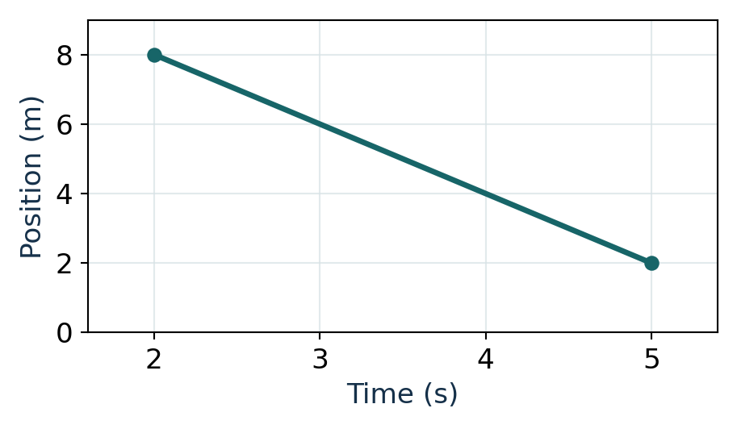
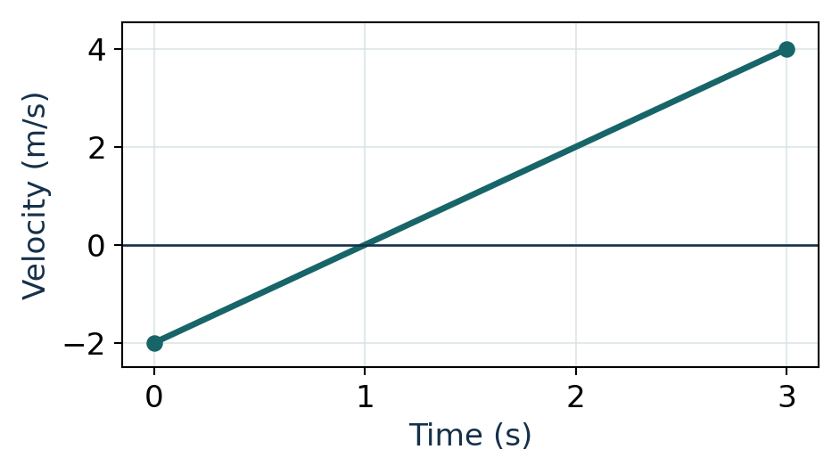
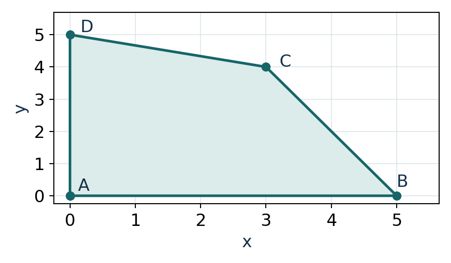

COMEDK UGET Test 3
180 minutes · 180 questions · +1 per correct answer · No negative marking
Physics
Q001. At a circuit junction, currents of 7 A and 2 A enter. One outgoing branch carries 4 A. What current leaves by the only other branch?
A) 9 A
B) 5 A
C) 3 A
D) 13 A
Worked solution
Answer: (B) 5 A
Why and working: Charge does not accumulate at the junction. Therefore 7+2=4+I, so I=5 A.
Why not the others: (A) omits the known outgoing current. (C) omits one incoming current. (D) adds an outgoing current as incoming.
Q002. A 0.50 kg mass produces a 2.5 cm static stretch in a vertical spring. Take g=10 m/s². What is the spring constant?
A) 200 N/m
B) 2 N/m
C) 20 N/m
D) 500 N/m
Worked solution
Answer: (A) 200 N/m
Why and working: At equilibrium kx=mg. Thus k=5/0.025=200 N/m.
Why not the others: (B) uses centimetres as metres. (C) misses one decimal place. (D) uses an incorrect stretch.
Q003. A 20-turn coil has area 0.01 m² per turn and carries 2 A. Its normal is perpendicular to a 0.30 T field. What torque acts?
A) 0.006 N·m
B) 0.12 N·m
C) 0.06 N·m
D) 0 N·m
Worked solution
Answer: (B) 0.12 N·m
Why and working: The moment is NIA=0.40 A·m². With normal perpendicular, τ=mB=0.12 N·m.
Why not the others: (A) omits turns. (C) omits the current factor. (D) would require parallel moment and field.
Q004. A prism of apex angle 60° in air has a symmetric ray path at minimum deviation. The emergence angle is 45° to the face normal. What is the deviation and refractive index respectively?
A) 30° and √2
B) 15° and √2
C) 30° and 1/√2
D) 90° and √2
Worked solution
Answer: (A) 30° and √2
Why and working: Symmetry gives i=e=45° and r₁=r₂=30°. Thus δ=45+45−60=30° and n=sin45°/sin30°=√2.
Why not the others: (B) subtracts the apex from one angle only. (C) inverts Snell's ratio. (D) omits the apex subtraction.
Q005. At point X on a string the first pulse contributes +3 cm and the second pulse contributes an unknown signed displacement. At point Y each contributes +2 cm. If the total transverse displacement at Y is 6 cm greater than at X, what is the second pulse’s displacement at X?
A) +5 cm
B) −2 cm
C) −5 cm
D) +1 cm
Worked solution
Answer: (C) −5 cm
Why and working: By superposition the total at Y is 4 cm, so the total at X must be 4 − 6 = −2 cm. If the second contribution at X is b, then 3 + b = −2, giving −5 cm.
Why not the others: (A) A positive contribution would raise X above +3 cm. (B) This is the net displacement at X, which includes both pulses. (D) This subtracts the first contribution from the result at Y.
Q006. What is the electrostatic field inside a uniformly charged thin spherical shell at an off-centre point in the cavity?
A) It points toward the centre
B) It points away from the centre
C) Zero
D) It has the same magnitude as just outside the shell
Worked solution
Answer: (C) Zero
Why and working: A concentric Gaussian sphere through the point encloses no charge. Spherical symmetry then gives E=0 on it.
Why not the others: (A) requires a nonzero enclosed charge in this configuration. (B) same error with opposite direction. (D) the field changes across the charged surface.
Q007. Two identical capacitors carry the same charge magnitude. One is replaced by a capacitor of twice the capacitance, charged to that same charge. How does its stored energy compare?
A) It is doubled
B) It stays equal
C) It is quartered
D) It is halved
Worked solution
Answer: (D) It is halved
Why and working: At fixed Q, U=Q²/(2C). Doubling C halves U.
Why not the others: (A) treats V as fixed. (B) fixed Q does not fix U. (C) uses inverse-square capacitance.
Q008. For a rotating body a proposed relation is E=CIωⁿ, where C is dimensionless, I is moment of inertia and ω is angular speed. What n makes E an energy?
A) 1
B) −2
C) 3
D) 2
Worked solution
Answer: (D) 2
Why and working: I has dimensions ML² and ω has T⁻¹. Energy has ML²T⁻², so n=2.
Why not the others: (A) gives angular momentum dimensions. (B) puts T² in the expression. (C) gives T⁻³.
Q009. In a Wheatstone bridge the left arm has 2 Ω above 6 Ω. The right arm has 3 Ω above R. The detector connects the arm midpoints. What R balances the bridge?
A) 4 Ω
B) 1 Ω
C) 9 Ω
D) 6 Ω
Worked solution
Answer: (C) 9 Ω
Why and working: With no current in the detector, the two midpoint voltages are equal. The top and bottom resistances therefore divide the same source voltage in the same ratio: 2/6 = 3/R. Cross-multiplying gives 2R = 18 and R = 9 Ω.
Why not the others: (A) uses the wrong ratio orientation. (B) divides 3 by 3. (D) copies the corresponding resistance despite the unequal top resistors.
Q010. A 20 Ω galvanometer gives full-scale deflection at 5 mA. What total series resistance must be added for a 5.0 V voltmeter range?
A) 1000 Ω
B) 20 Ω
C) 1020 Ω
D) 980 Ω
Worked solution
Answer: (D) 980 Ω
Why and working: At full scale the combined resistance must be V/I=5/0.005=1000 Ω. Subtract the coil's 20 Ω.
Why not the others: (A) gives the total including the coil. (B) gives the coil alone. (C) adds the coil rather than subtracting.
Q011. The graph shows a segment of the motion of a particle. What does the slope of the plotted segment indicate?

A) Constant speed −2 m/s
B) Constant acceleration −2 m/s²
C) Constant velocity −2 m/s
D) Constant velocity +2 m/s
Worked solution
Answer: (C) Constant velocity −2 m/s
Why and working: The ordinate is position, so the slope is velocity. The coordinates change by 2 − 8 = −6 m in 5 − 2 = 3 s, so the line represents constant velocity −2 m/s.
Why not the others: (A) speed cannot be negative. (B) acceleration is slope of velocity vs time. (D) displacement is negative.
Q012. A compound microscope's objective produces a real intermediate image 8 times the object's height in magnitude. The eyepiece gives angular magnification 5 for that image. What is the total magnitude?
A) 13
B) 8/5
C) 5/8
D) 40
Worked solution
Answer: (D) 40
Why and working: The objective forms an intermediate image with magnitude of linear magnification 8. The eyepiece forms the viewing image with angular magnification 5 relative to that intermediate image. Their magnitudes multiply to 8 × 5 = 40.
Why not the others: (A) adds the factors. (B) divides the factors. (C) inverts objective magnification.
Q013. An astronomical telescope in normal adjustment has objective focal length 80 cm and magnification magnitude 16. What are eyepiece focal length and separation respectively?
A) 5 cm and 85 cm
B) 5 cm and 75 cm
C) 1280 cm and 1360 cm
D) 16 cm and 96 cm
Worked solution
Answer: (A) 5 cm and 85 cm
Why and working: The astronomical telescope at normal adjustment has angular magnification magnitude fₒ/fₑ. Thus fₑ = 80/16 = 5 cm. The two lenses share a focal plane in this adjustment, so separation = fₒ + fₑ = 80 + 5 = 85 cm.
Why not the others: (B) uses the difference. (C) multiplies instead of dividing. (D) confuses the ratio with centimetres.
Q014. Two perpendicular displacements are 6 m west and 8 m north. What is the resultant magnitude?
A) 10 m
B) 14 m
C) 2 m
D) 48 m
Worked solution
Answer: (A) 10 m
Why and working: Use the Pythagorean sum √(6²+8²)=10 m.
Why not the others: (B) adds perpendicular lengths. (C) subtracts perpendicular lengths. (D) multiplies quantities with wrong dimensions.
Q015. An isolated conductor loses 4.0×10⁹ electrons. With e=1.6×10⁻¹⁹ C, how does its charge change?
A) It decreases by 6.4×10⁻¹⁰ C
B) It increases by 6.4×10⁻²⁸ C
C) It increases by 6.4×10⁻¹⁰ C
D) It stays fixed because electrons are negative
Worked solution
Answer: (C) It increases by 6.4×10⁻¹⁰ C
Why and working: The electrons removed have total charge −Ne. The change in the remaining conductor is therefore +Ne = (4.0 × 10⁹)(1.6 × 10⁻¹⁹) C = +6.4 × 10⁻¹⁰ C.
Why not the others: (A) uses the sign of the removed particles rather than the change of the conductor. (B) adds exponents incorrectly. (D) the system boundary is crossed by electrons.
Q016. At A and B the potentials are +10 V and −2 V. A charge −3 μC moves from A to B. What is its potential energy change?
A) −36 μJ
B) +36 μJ
C) +24 μJ
D) −6 μJ
Worked solution
Answer: (B) +36 μJ
Why and working: ΔV=−2−10=−12 V. Then ΔU=qΔV=(−3 μC)(−12 V)=+36 μJ.
Why not the others: (A) drops the charge's negative sign. (C) uses the sum of potentials. (D) uses just the final potential.
Q017. Earth pulls a falling apple downward. Which force is the Newton's-third-law partner?
A) Earth pushes the apple upward
B) The apple pulls itself upward
C) The apple pulls Earth upward
D) The air must exert a drag equal to gravity
Worked solution
Answer: (C) The apple pulls Earth upward
Why and working: The two forces come from the same gravitational interaction and act on different bodies.
Why not the others: (A) acts on the same body. (B) an internal self-force is not the partner. (D) drag is a different interaction.
Q018. Electrons in a metal wire drift west. If the electrons are the only mobile carriers, where does the conventional current point?
A) West
B) North
C) East
D) It vanishes because each carrier is negative
Worked solution
Answer: (C) East
Why and working: Conventional current follows positive charge flow, opposite to electron drift.
Why not the others: (A) follows the electrons rather than positive current. (B) no northward drift is specified. (D) negative charges still carry current.
Q019. A straight horizontal wire carries conventional current due north. At a point directly east of the wire and at the same height, which way does the wire’s magnetic field point?
A) Vertically downward
B) Vertically upward
C) Due west
D) Due north
Worked solution
Answer: (A) Vertically downward
Why and working: Take east as +x, north as +y and up as +z. The wire element points north and the radial direction to the point is east. By the right-hand rule, the field follows +y × +x = −z, vertically downward.
Why not the others: (B) Up would follow if the current were reversed. (C) West would point radially into the wire instead of tangent to the field circle. (D) The magnetic field does not run parallel to the wire.
Q020. Two identical linear springs are separately stretched by x and compressed by 2x. What is the ratio of stored energies, compressed to stretched?
A) 2
B) 4
C) −4
D) 1/4
Worked solution
Answer: (B) 4
Why and working: For either sign of displacement, U=kx²/2. The doubled magnitude gives four times the energy.
Why not the others: (A) uses linear instead of squared dependence. (C) elastic energy is nonnegative relative to equilibrium. (D) inverts the requested ratio.
Q021. Looking into a solenoid's front face, its current is counterclockwise. The solenoid is flipped end-for-end while its supply connections and current magnitude are preserved. What pole is now presented at the original observation position?
A) North, because flipping reverses current direction inside the wire
B) North, because both ends have the same polarity
C) South, since the former far end now faces the observer
D) Neither pole, because flipping cancels the field
Worked solution
Answer: (C) South, since the former far end now faces the observer
Why and working: Counterclockwise viewed from a face gives north. The far end of the effective bar magnet is south and becomes the near face after the flip.
Why not the others: (A) flipping does not reverse current through the winding. (B) the two ends have opposite polarity. (D) the flip does not switch off current.
Q022. A loop of fixed area A has its normal at 60° to a field of magnitude B. The field magnitude falls to B/2 while the loop rotates so its normal becomes parallel to the field. What is the net flux change?
A) +BA/2
B) Zero
C) −BA/2
D) +BA/4
Worked solution
Answer: (B) Zero
Why and working: Initially Φ=BAcos60°=BA/2. Finally Φ=(B/2)Acos0°=BA/2. Subtracting gives zero.
Why not the others: (A) reports the final flux. (C) treats final flux as zero. (D) accounts for the field change but not the full rotation.
Q023. A spinning skater draws their arms inward with negligible external torque. Which quantity about the spin axis is conserved?
A) Angular speed
B) Moment of inertia
C) Angular momentum
D) Rotational kinetic energy necessarily
Worked solution
Answer: (C) Angular momentum
Why and working: Zero external torque means dL/dt=0. Internal forces can change the inertia and rotational kinetic energy.
Why not the others: (A) changes with inertia. (B) decreases as mass approaches the axis. (D) internal work may change it.
Q024. A sinusoidal voltage is written v(t)=120√2 sin(ωt) V. An ideal AC voltmeter reports rms. What does it read?
A) 120√2 V
B) 60 V
C) 120 V
D) 0 V
Worked solution
Answer: (C) 120 V
Why and working: The amplitude is 120√2 V. A sinusoidal voltage has rms magnitude V_peak/√2 because the mean of sin² over a cycle is 1/2. This gives 120 V.
Why not the others: (A) reports the peak. (B) divides by an additional factor of two. (D) reports signed time average.
Q025. An ideal parallel-plate capacitor charges with a constant current. If its plate area is doubled in a second setup at the same charging current, what happens to the gap electric field's rate of increase and total displacement current?
A) Both halve
B) Field rate halves, displacement current stays the same
C) Both stay the same
D) Field rate doubles, displacement current halves
Worked solution
Answer: (B) Field rate halves, displacement current stays the same
Why and working: E=Q/(ε₀A), so dE/dt=I/(ε₀A). Multiplying by ε₀A for displacement current restores the same I.
Why not the others: (A) ignores the increased flux area. (C) ignores field dependence on area. (D) reverses the field-rate scaling.
Q026. In a uniform-density Earth model, g at its surface is g₀. What is g at a depth equal to one quarter of its radius?
A) g₀/4
B) 16g₀/9
C) g₀
D) 3g₀/4
Worked solution
Answer: (D) 3g₀/4
Why and working: At depth R/4 the distance from the centre is r = 3R/4. The enclosed mass is M(r) = M(r/R)³ in this model. Then g(r)/g₀ = [GM(r)/r²]/[GM/R²] = r/R = 3/4.
Why not the others: (A) uses depth instead of radius. (B) applies the exterior inverse-square rule inside. (C) ignores changed enclosed mass.
Q027. A concave mirror of focal-length magnitude f forms a real image at the same distance from the mirror as the real object. What is the image's orientation and size?
A) Inverted and equal in size
B) Upright and equal in size
C) Inverted and twice the size
D) Upright and half the size
Worked solution
Answer: (A) Inverted and equal in size
Why and working: The equality u=v gives u=v=2f from the mirror equation. Signed magnification of a real image is −v/u=−1.
Why not the others: (B) misreads the negative magnification. (C) confuses distance 2f with magnification 2. (D) both orientation and size are incorrect.
Q028. A plane wavefront propagates in a homogeneous medium. According to Huygens, what determines the plane wavefront a short time later?
A) The original front plus only its midpoint wavelet
B) The set of all ray directions without positions
C) The locus of secondary-wavelet centres
D) The common outer envelope of secondary wavelets
Worked solution
Answer: (D) The common outer envelope of secondary wavelets
Why and working: Every point generates a secondary wavelet. The forward tangent envelope gives the new surface of equal phase.
Why not the others: (A) every point contributes. (B) directions alone do not construct a front. (C) the centres lie on the old front.
Q029. A wire under small tension has longitudinal strain 0.004 and lateral strain −0.001. What is its Poisson ratio?
A) −0.25
B) 4
C) 0.25
D) −4
Worked solution
Answer: (C) 0.25
Why and working: Poisson ratio is minus the ratio of lateral to longitudinal strain. Substituting the signed strains gives −(−0.001)/0.004 = 0.25, dimensionless.
Why not the others: (A) omits the defining sign. (B) takes the reciprocal. (D) inverts and omits the sign.
Q030. A metal is illuminated at two different frequencies, both above threshold. The brighter beam is also the lower-frequency beam. Which comparison can be predicted without knowing the intensities quantitatively?
A) The lower-frequency beam gives smaller stopping-potential magnitude
B) The brighter beam necessarily gives larger stopping potential
C) Both beams give equal stopping potential because both exceed threshold
D) The higher-frequency beam must produce a higher saturation current
Worked solution
Answer: (A) The lower-frequency beam gives smaller stopping-potential magnitude
Why and working: Stopping voltage is set by maximum electron energy hf−φ. Lower f reduces it for the same material. Saturation current depends on photon flux and collection.
Why not the others: (B) confuses intensity with photon energy. (C) above threshold does not mean equal excess energy. (D) frequency alone cannot fix emission count.
Q031. In a Rutherford experiment a foil is made thinner without changing its material, and incident energy is raised. Which combined change makes large-angle deflections less likely, and why?
A) Both changes reduce the count through fewer close encounters and weaker deflection for a given impact parameter
B) Thinning increases the count because nuclei move closer
C) Increasing energy increases the count because projectiles spend longer near a nucleus
D) Both changes leave the large-angle count unchanged because only atomic number matters
Worked solution
Answer: (A) Both changes reduce the count through fewer close encounters and weaker deflection for a given impact parameter
Why and working: Fewer nuclei lie along each path in thinner foil. At larger kinetic energy the interaction deflects the projectile less at a given offset, so a closer approach is needed for a large angle.
Why not the others: (B) number encountered falls. (C) faster particles do not spend longer. (D) geometry and kinetic energy also affect the count.
Q032. At terminal speed in a viscous liquid, what is the net force on the falling bead?
A) Equal to its weight downward
B) Equal to drag upward
C) Zero
D) Increasing downward
Worked solution
Answer: (C) Zero
Why and working: Terminal speed is steady. Weight is balanced by drag plus buoyancy.
Why not the others: (A) ignores upward forces. (B) ignores weight and buoyancy. (D) would increase speed.
Q033. Why is the volume of a nucleus approximately proportional to its mass number A?
A) Its radius scales approximately as A
B) Its radius scales approximately as A²
C) Its volume is independent of nucleon count
D) Its radius scales approximately as A^(1/3)
Worked solution
Answer: (D) Its radius scales approximately as A^(1/3)
Why and working: The empirical relation R≈r₀A^(1/3) gives R³∝A and hence approximately constant nuclear density.
Why not the others: (A) would yield volume proportional to A³. (B) would yield volume proportional to A⁶. (C) contradicts the radius scaling.
Q034. What distinguishes a typical metal from an intrinsic semiconductor at low temperature in band language?
A) A metal has readily available nearby empty states in a partly filled or overlapping band
B) A typical metal has the widest forbidden gap
C) Semiconductors have no valence band
D) Neither class can conduct even when a band is partly filled
Worked solution
Answer: (A) A metal has readily available nearby empty states in a partly filled or overlapping band
Why and working: Available nearby energies permit carriers to respond to an electric field without needing to cross a forbidden gap.
Why not the others: (B) a wide gap inhibits ordinary conduction. (C) both possess valence states. (D) a partly filled band can conduct.
Q035. Equal masses of water at 80°C and 20°C are mixed in an insulated vessel of negligible heat capacity. What is the equilibrium temperature?
A) 60°C
B) 40°C
C) 50°C
D) 100°C
Worked solution
Answer: (C) 50°C
Why and working: The two equal heat capacities give mc(80−T)=mc(T−20). Hence T=50°C.
Why not the others: (A) weights the hot part too heavily. (B) weights the cold part too heavily. (D) adds temperatures instead of balancing heat.
Q036. Two identical positive charges lie at x=±a. At a point on the positive y-axis, what is the direction of the combined electric field?
A) Along negative y
B) Along positive x
C) Along positive y
D) Zero for every y
Worked solution
Answer: (C) Along positive y
Why and working: Horizontal components cancel by reflection symmetry, while vertical contributions from positive sources both point upward.
Why not the others: (A) would reverse the signs of both sources. (B) horizontal components cancel. (D) the y components reinforce.
Q037. A dipole has +q at x = +a and −q at x = −a. What is the potential difference V(+3a) − V(−3a), using k for the Coulomb constant?
A) 0
B) −kq/(2a)
C) kq/(4a)
D) kq/(2a)
Worked solution
Answer: (D) kq/(2a)
Why and working: At +3a the charges are 2a and 4a away, giving V = kq/(2a) − kq/(4a) = kq/(4a). The distances switch at −3a, so V = −kq/(4a). Subtracting gives kq/(2a).
Why not the others: (A) The individual potentials have opposite signs rather than equal values. (B) This subtracts in the reverse order. (C) This is the potential at +3a alone.
Q038. Two proposed cyclic devices exchange energy with just one thermal reservoir each. X takes 100 J of heat and supplies 100 J of mechanical work. Y takes 100 J of mechanical work and deposits 100 J of heat. Which can operate as described?
A) Only X
B) Both X and Y
C) Neither X nor Y
D) Only Y
Worked solution
Answer: (D) Only Y
Why and working: Both proposals balance energy over a cycle. X has the sole effect of converting heat from a single reservoir completely into work, which the second law forbids. Y can dissipate supplied work into heat through friction.
Why not the others: (A) This reverses the allowed direction of complete conversion. (B) First-law consistency is insufficient for X. (C) Work can be dissipated completely as heat.
Q039. Two wires X and Y have the same carrier charge magnitude and steady electric field. Y has twice the carrier density, three times the cross-sectional area and half the mobility of X. What is IY/IX?
A) 1
B) 6
C) 3
D) 1/3
Worked solution
Answer: (C) 3
Why and working: Drift speed magnitude is μE, so vY/vX = 1/2. With I = n A e v and equal e, the current ratio is 2 × 3 × 1/2 = 3.
Why not the others: (A) This is the ratio of current densities and omits area. (B) This misses the smaller drift speed in Y. (D) This reverses the wires.
Q040. At the centre of a single circular loop, what happens to magnetic field magnitude when radius is doubled at fixed current?
A) It doubles
B) It quarters
C) It is unchanged
D) It halves
Worked solution
Answer: (D) It halves
Why and working: B=μ₀I/(2R) is inversely proportional to radius.
Why not the others: (A) uses direct proportionality. (B) uses inverse square. (C) ignores radius.
Q041. In the classical approximation with vibration inactive, how many active degrees of freedom does a diatomic molecule have compared with a monatomic molecule?
A) 5 versus 3
B) 3 versus 5
C) 6 versus 3
D) 7 versus 3
Worked solution
Answer: (A) 5 versus 3
Why and working: Both have three translational degrees. A diatomic molecule has two active rotational degrees about axes perpendicular to its bond.
Why not the others: (B) reverses the classes. (C) counts rotation about the bond axis. (D) includes vibrational contributions excluded in the stem.
Q042. At equal distances from a short bar magnet, how does the magnetic field magnitude on the axial line compare with that on the equatorial line in the dipole approximation?
A) Half as large
B) Twice as large
C) Equal
D) Four times as large
Worked solution
Answer: (B) Twice as large
Why and working: The axial dipole field has coefficient 2m, and the equatorial magnitude has coefficient m with the same inverse-cube factor.
Why not the others: (A) inverts the ratio. (C) ignores the orientation factor. (D) squares the factor of two.
Q043. The magnetic flux per turn of a closed 20-turn coil of resistance 4 Ω changes uniformly by 0.06 Wb. What charge magnitude passes through it, neglecting self-induction?
A) 0.30 C
B) 1.2 C
C) 0.015 C
D) 4.8 C
Worked solution
Answer: (A) 0.30 C
Why and working: Integrate I=N(−dΦ/dt)/R. The magnitude is NΔΦ/R=20×0.06/4=0.30 C.
Why not the others: (B) does not divide by resistance. (C) omits the turns. (D) multiplies by resistance.
Q044. A particle in SHM is at half its amplitude. What fraction of its total mechanical energy is kinetic?
A) 1/4
B) 1/2
C) 1
D) 3/4
Worked solution
Answer: (D) 3/4
Why and working: Potential energy scales as x², so it is one quarter of total at x=A/2. The remainder is kinetic.
Why not the others: (A) gives the potential fraction. (B) assumes potential is linear in x. (C) applies only at equilibrium.
Q045. A series circuit at one frequency has R = 4 Ω, XL = 9 Ω and XC = 6 Ω. Which statement describes its current compared with the source voltage?
A) It lags, with tan of the lag angle equal to 3/4
B) It leads, with tan of the lead angle equal to 3/4
C) It is in phase because XL and XC cancel
D) It lags, with tan of the lag angle equal to 4/3
Worked solution
Answer: (A) It lags, with tan of the lag angle equal to 3/4
Why and working: The net reactance is XL − XC = 3 Ω, positive and inductive. Therefore current lags the voltage, and tan φ = (XL − XC)/R = 3/4.
Why not the others: (B) Current leads for negative net reactance. (C) The unequal reactances leave a nonzero difference. (D) This reverses reactance and resistance in the ratio.
Q046. Which orientation is possible in a plane electromagnetic wave in vacuum?
A) E along x, B along x, propagation along z
B) E along x, B along y, propagation along z
C) E along z, B along y, propagation along z
D) E along x, B along y, propagation along x
Worked solution
Answer: (B) E along x, B along y, propagation along z
Why and working: E and B are transverse and perpendicular, with E×B in the propagation direction.
Why not the others: (A) parallel fields give zero cross product. (C) E would be longitudinal. (D) propagation must be normal to both fields.
Q047. A positive displacement pulse moves to the right toward a fixed end on a string. A second identical positive pulse follows it. Just after the first reflects, the reflected and following pulses exactly overlap. What is the immediate resultant displacement?
A) Zero
B) Twice each pulse's positive displacement
C) Twice each pulse's negative displacement
D) The displacement of the incident pulse only
Worked solution
Answer: (A) Zero
Why and working: At a fixed end the reflected pulse inverts. Exact overlap with the equal positive pulse cancels the displacements while both continue travelling.
Why not the others: (B) assumes no inversion. (C) inverts both pulses. (D) ignores the reflected wave.
Q048. A ray passes from a liquid of index 4/3 through a glass window of index 3/2 and then into air. The two faces are parallel. Its outgoing angle in air is 60° from the normal. What is the sine of its original angle in the liquid?
A) 4√3/9
B) 3√3/8
C) √3/3
D) √3/2
Worked solution
Answer: (B) 3√3/8
Why and working: Apply Snell’s law at the first and second surfaces. For parallel faces the angle inside glass is the same at both, so (4/3) sin i = (3/2) sin g = sin 60°. Therefore sin i = (3/4)(√3/2) = 3√3/8.
Why not the others: (A) This uses the ratio of the liquid and glass indices on the final sine. (C) This computes the angle inside the glass. (D) This gives the outgoing sine in air.
Q049. In specular reflection of a plane wave at a plane surface, how do incidence and reflection angles compare when measured from the normal?
A) They always sum to 90°
B) They are equal
C) The reflection angle is twice incidence
D) The reflection angle is zero for all incident rays
Worked solution
Answer: (B) They are equal
Why and working: The law of reflection gives equality when both angles use the surface normal.
Why not the others: (A) describes only certain special angles. (C) confuses an angular separation with the reflected angle. (D) applies only to normal incidence.
Q050. The diagram shows a velocity–time graph. What is the displacement between the first and last instants plotted?

A) +5 m
B) +3 m
C) +9 m
D) −3 m
Worked solution
Answer: (B) +3 m
Why and working: The plot crosses zero at t = 1 s. Below the axis it sweeps a triangle with signed area −½ × 1 × 2 = −1 m. Above the axis it sweeps +½ × 2 × 4 = +4 m. Their sum gives displacement +3 m.
Why not the others: (A) This adds both area magnitudes as total distance. (C) This takes the mean of the endpoint speed magnitudes and treats it as the mean velocity. (D) This reverses the sign of the net area.
Q051. A metal has work function 2.1 eV. Photons of energy 3.7 eV are incident. What stopping voltage magnitude is expected?
A) 1.6 V
B) 5.8 V
C) 3.7 V
D) 2.1 V
Worked solution
Answer: (A) 1.6 V
Why and working: Einstein's equation gives Kmax=3.7−2.1=1.6 eV, so eVs=Kmax gives 1.6 V.
Why not the others: (B) adds the work function. (C) ignores energy needed for emission. (D) reports threshold energy numerically.
Q052. In the Bohr model of hydrogen, the electron speed in orbit Y is half its speed in orbit X. How does the magnitude of its total energy in Y compare with that in X?
A) It is half as large
B) It is twice as large
C) It is four times as large
D) It is one quarter as large
Worked solution
Answer: (D) It is one quarter as large
Why and working: Bohr speed scales as 1/n, so halving the speed doubles n. The magnitude of the total energy scales as 1/n², so the larger orbit has one quarter of the binding-energy magnitude.
Why not the others: (A) This applies the speed scaling directly to energy. (B) The higher-n state is less tightly bound. (C) This inverts the squared ratio.
Q053. A force of magnitude 10 N points along vector 3i+4j. What is its x component?
A) 8 N
B) 6 N
C) 30 N
D) 3 N
Worked solution
Answer: (B) 6 N
Why and working: The direction (3,4) has length √(3² + 4²) = 5, so its unit vector is (3/5,4/5). The force has x component 10 × 3/5 = 6 N.
Why not the others: (A) uses the y component. (C) multiplies by an unnormalised component. (D) omits the scale.
Q054. A reaction has less total product rest mass than initial rest mass. It releases 5.586 MeV into kinetic energy and radiation. In atomic mass units, what is the initial mass minus the final mass if 1 u c²=931 MeV?
A) 0.0030 u
B) 0.0060 u
C) 0.060 u
D) −0.0060 u
Worked solution
Answer: (B) 0.0060 u
Why and working: The release equals (m_initial − m_final)c². Convert from energy to mass by dividing: 5.586/931 = 0.0060 u. The sign is positive because the initial mass is larger.
Why not the others: (A) The stated energy is for the entire reaction, so there is no factor of two. (C) This displaces the decimal point by one place. (D) A positive release corresponds to a positive deficit as defined.
Q055. Heating a pure intrinsic semiconductor creates mobile electrons and holes. What relation holds between the added carrier concentrations?
A) Only electron concentration increases
B) Only hole concentration increases
C) The two increases have opposite signs
D) They increase by equal amounts
Worked solution
Answer: (D) They increase by equal amounts
Why and working: Each thermal promotion leaves a hole and adds one conduction electron, creating carriers in pairs.
Why not the others: (A) misses the vacancy. (B) misses the promoted electron. (C) both numbers grow.
Q056. A 2 kg cart moving east at 6 m/s collides and sticks to a 4 kg cart moving north at 3 m/s. Neglect external horizontal impulse. What speed and direction follow?
A) 4 m/s due north
B) 2√2 m/s toward northeast
C) 3 m/s due east
D) Zero
Worked solution
Answer: (B) 2√2 m/s toward northeast
Why and working: The initial momentum is (12,12) kg m/s in east and north components. Divide by 6 kg: velocity (2,2), giving 2√2 m/s northeast.
Why not the others: (A) adds perpendicular components as a northward scalar. (C) keeps just one cart's motion. (D) perpendicular momenta do not cancel.
Q057. A thin plate consists of a region of area A carrying uniform surface charge +2σ and a region of area 3A carrying uniform surface charge −σ, with σ positive. What is its total charge?
A) +σA
B) +5σA
C) −4σA
D) −σA
Worked solution
Answer: (D) −σA
Why and working: For each region Q = surface density × area. Summing the signed charges gives (+2σ)A + (−σ)(3A) = −σA.
Why not the others: (A) The negatively charged region has the greater total magnitude. (B) Adding magnitudes ignores the opposite signs. (C) This treats the two surface densities as a common −σ.
Q058. For a nonzero electrostatic field, how is its direction oriented relative to the local equipotential surface?
A) Tangent to it
B) Always at 45° to it
C) Always parallel to Earth's surface
D) Normal to it
Worked solution
Answer: (D) Normal to it
Why and working: Any tangent displacement has zero potential change. Thus the field has no tangent component and is along a normal.
Why not the others: (A) would cause potential to vary along the surface. (B) would leave a tangent component. (C) the orientation depends on the charge distribution.
Q059. A crate moves up and down the same rough ramp, returning to its starting point. What happens to the net work of gravity and kinetic friction over the full path?
A) Both do zero net work
B) Gravity does zero net work and friction does negative net work
C) Both do negative net work
D) Gravity does positive net work while friction does zero
Worked solution
Answer: (B) Gravity does zero net work and friction does negative net work
Why and working: Gravity's work depends only on height change, which is zero. Kinetic friction opposes each leg, so the contributions are both negative.
Why not the others: (A) friction is nonconservative. (C) no net height change means no net work from gravity. (D) returning does not reverse friction's work sign.
Q060. Which observation indicates an ohmic resistor maintained at fixed temperature over the measured range?
A) The graph of V against I is a straight line through the origin
B) The graph has a constant nonzero intercept and positive slope
C) The current stays constant as V changes
D) Resistance V/I doubles whenever V doubles
Worked solution
Answer: (A) The graph of V against I is a straight line through the origin
Why and working: Ohm's law V=RI with constant R gives the origin and constant slope.
Why not the others: (B) a nonzero intercept violates proportionality. (C) voltage does not vary proportionally to current. (D) the inferred resistance changes.
Chemistry
Q061. A 0.50 molal urea solution contains 200 g water. How many moles of urea does it contain?
A) 0.25
B) 0.10
C) 0.50
D) 2.50
Worked solution
Answer: (B) 0.10
Why and working: Molality divides solute amount by solvent mass in kg. Hence n = 0.50 × 0.200 = 0.10 mol.
Why not the others: (A) This corresponds to 500 g of water. (C) This is the amount per kg. (D) This divides by the solvent mass instead of multiplying.
Q062. Two blocks at 40 °C and 10 °C have heat capacities 90 and 30 J K⁻¹, respectively. Find their common temperature when thermally isolated.
A) 32.5 °C
B) 25 °C
C) 17.5 °C
D) 35 °C
Worked solution
Answer: (A) 32.5 °C
Why and working: By conservation 90(40 − T) = 30(T − 10). Solving gives 120T = 3900, so T = 32.5 °C.
Why not the others: (B) Equal weighting ignores the heat capacities. (C) This puts the greater capacity on the colder block. (D) This would require a capacity ratio of 5 rather than 3.
Q063. A cell uses the couples Fe³⁺/Fe²⁺ and I₂/I⁻ at standard conditions, with reduction potentials +0.77 V and +0.54 V respectively. Which overall spontaneous reaction occurs?
A) 2Fe²⁺ + I₂ → 2Fe³⁺ + 2I⁻
B) Fe³⁺ + I⁻ → Fe²⁺ + I₂
C) Both Fe³⁺ and I₂ gain electrons
D) 2Fe³⁺ + 2I⁻ → 2Fe²⁺ + I₂
Worked solution
Answer: (D) 2Fe³⁺ + 2I⁻ → 2Fe²⁺ + I₂
Why and working: Fe³⁺ is reduced at the higher reduction potential. Reverse and balance 2I⁻ → I₂ + 2e⁻, then add twice Fe³⁺ + e⁻ → Fe²⁺. The cell potential is +0.23 V.
Why not the others: (A) The reverse has negative standard EMF. (B) This has unequal iodine atom counts. (C) The two reductions alone cannot supply electrons.
Q064. From t = 0 to 4 s, [A] = (0.80 − 0.06t + 0.005t²) mol L⁻¹, with t in seconds. At what time does the instantaneous disappearance rate equal the average disappearance rate over the interval?
A) 2 s
B) 1 s
C) 3 s
D) 4 s
Worked solution
Answer: (A) 2 s
Why and working: [A](4) = 0.64, so the average rate is (0.80 − 0.64)/4 = 0.040 mol L⁻¹ s⁻¹. The instantaneous rate is −d[A]/dt = 0.06 − 0.010t. Equating gives t = 2 s.
Why not the others: (B) At 1 s the rate is 0.050. (C) At 3 s the rate is 0.030. (D) At 4 s the rate is 0.020.
Q065. Which species is the conjugate base formed in the second dissociation of phosphoric acid?
A) H₂PO₄⁻
B) PO₄³⁻
C) H₃PO₄
D) HPO₄²⁻
Worked solution
Answer: (D) HPO₄²⁻
Why and working: The first step forms H₂PO₄⁻. Its next proton loss gives HPO₄²⁻. Each loss decreases the species charge by one.
Why not the others: (A) This is the first dissociation product. (B) This appears after three proton losses. (C) This is the fully protonated acid.
Q066. Which gaseous ion has the same ground-state number of 3d electrons as Sc, atomic number 21?
A) Ti³⁺ (Z = 22)
B) Ti²⁺ (Z = 22)
C) V²⁺ (Z = 23)
D) Sc³⁺ (Z = 21)
Worked solution
Answer: (A) Ti³⁺ (Z = 22)
Why and working: Sc has [Ar] 3d¹ 4s². Ti loses the 4s electrons before one 3d electron, giving Ti³⁺ = [Ar] 3d¹.
Why not the others: (B) Ti²⁺ keeps both 3d electrons. (C) V²⁺ retains its three 3d electrons. (D) Sc³⁺ has a closed argon core.
Q067. Two mononuclear complexes each contain exactly four ligand molecules or ions. One contains four monodentate ligands. The other contains two monodentate and two bidentate ligands. By how much does the latter coordination number exceed the former?
A) 0
B) 2
C) 1
D) 4
Worked solution
Answer: (B) 2
Why and working: Coordination number counts bound donor atoms. The first complex uses 4 × 1 = 4 sites. The second uses 2 × 1 + 2 × 2 = 6 sites, two more.
Why not the others: (A) Equal ligand counts can hide different amounts of binding. (C) Two ligands each add one site relative to a monodentate ligand. (D) Four is the total number of sites supplied by the bidentate ligands, including their first sites.
Q068. Which process illustrates the electromeric effect during electrophilic attack on an alkene?
A) Persistent σ-bond polarisation caused by an electronegative substituent
B) Equal contribution of two Lewis structures to a stable ion
C) Transfer of the alkene π pair to bond to the approaching electrophile
D) Cleavage of a σ bond to give one electron to each fragment
Worked solution
Answer: (C) Transfer of the alkene π pair to bond to the approaching electrophile
Why and working: On approach of the electrophile, the alkene π pair is displaced together and forms a new bond. The electromeric effect is associated with reagent-induced movement of the multiple-bond electrons.
Why not the others: (A) This describes the inductive effect. (B) This describes resonance. (D) This describes homolysis.
Q069. Which structural description matches 1-bromo-2-methylbutane?
A) Br and the methyl branch are on the same carbon
B) Br is on an internal CH and the methyl branch is on the carbon next to it
C) Br is on a terminal CH₂ and there is one methyl branch on the adjacent carbon
D) Br is on a terminal CH₂ of an unbranched five-carbon chain
Worked solution
Answer: (C) Br is on a terminal CH₂ and there is one methyl branch on the adjacent carbon
Why and working: Number the four-carbon parent from the brominated end. Locant 1 places Br on CH₂Br and locant 2 gives CH₂Br–CH(CH₃)–CH₂–CH₃.
Why not the others: (A) The locants 1 and 2 refer to distinct carbons. (B) A C1 atom of a butane parent is terminal. (D) The named parent is branched butane.
Q070. Which starting carbonyl compound gives a secondary alcohol on adding one methyl group with a Grignard reagent, followed by hydrolysis?
A) Methanal
B) Propanone
C) Butan-2-one
D) Ethanal
Worked solution
Answer: (D) Ethanal
Why and working: The methyl group bonds to the carbonyl carbon and the oxygen becomes OH after hydrolysis. Ethanal retains its original H and CH₃ at that carbon and adds CH₃, giving propan-2-ol with two carbon neighbours.
Why not the others: (A) Methanal retains two hydrogens there and gives a primary alcohol. (B) A ketone retains two carbon groups and adds a third, giving a tertiary alcohol. (C) This ketone also supplies a tertiary alcohol.
Q071. When ethane is heated without air, which pair can represent a dehydrogenation step in pyrolysis?
A) Ethene and water
B) Ethene and hydrogen
C) Carbon dioxide and water
D) Ethene and methane
Worked solution
Answer: (B) Ethene and hydrogen
Why and working: The balanced dehydrogenation is C₂H₆ → C₂H₄ + H₂. It creates the double bond while conserving both elements.
Why not the others: (A) Water requires an oxygen source. (C) These are complete combustion products. (D) The products would contain three carbons.
Q072. Which name correctly describes CH₃COCH(CH₃)CH₂CHO?
A) 3-methyl-2-oxopentanal
B) 3-methyl-4-formylbutan-2-one
C) 3-methyl-4-oxopentanal
D) 3-methylpentane-1,4-dione
Worked solution
Answer: (C) 3-methyl-4-oxopentanal
Why and working: The aldehyde has suffix priority and its carbon is C1. The chain has five carbons. It bears methyl at C3 and the second carbonyl at C4, described by oxo.
Why not the others: (A) The oxo group is four positions from the numbered start, at C4. (B) This gives the ketone suffix priority. (D) A terminal aldehyde is not a terminal ketone.
Q073. Which structure represents N-ethyl-N-methylpropan-1-amine, and what is its class?
A) CH₃CH₂CH(NHCH₃)CH₂CH₃, secondary
B) CH₃CH₂CH₂N(CH₃)CH₂CH₃, tertiary
C) CH₃CH₂CH₂NHCH₂CH₃, secondary
D) CH₃CH₂CH₂CH₂CH₂CH₂NH₂, primary
Worked solution
Answer: (B) CH₃CH₂CH₂N(CH₃)CH₂CH₃, tertiary
Why and working: The parent attaches to nitrogen at the end of a propyl chain. N-methyl and N-ethyl attach directly to the same nitrogen, giving three carbon groups and no N–H bond.
Why not the others: (A) That nitrogen has only two carbon substituents. (C) The methyl substituent on nitrogen is missing. (D) This puts all six carbons in the parent chain.
Q074. Using C = 12, H = 1 and O = 16, what is the mass percentage of oxygen in CH₃OH?
A) 25%
B) 50%
C) 16%
D) 53.3%
Worked solution
Answer: (B) 50%
Why and working: The molar mass is 12 + 4 + 16 = 32 g mol⁻¹. Oxygen supplies 16 g per mole, giving 100 × 16/32 = 50%.
Why not the others: (A) Counting oxygen among groups does not give its mass fraction. (C) 16 is oxygen's mass contribution in grams per mole. (D) This treats the molecular mass as 30.
Q075. Which change would turn an open-chain aldohexose carbon skeleton into a ketohexose carbon skeleton at C2, ignoring configuration?
A) Replace the C1 aldehyde by CH₂OH and the C2 CHOH by C=O
B) Oxidise only the C1 aldehyde to COOH
C) Move the C1 aldehyde to the opposite terminal end
D) Convert every alcohol to a carbonyl
Worked solution
Answer: (A) Replace the C1 aldehyde by CH₂OH and the C2 CHOH by C=O
Why and working: For a conventional open-chain 2-ketohexose, C1 is CH₂OH, C2 is an internal carbonyl, and the remaining carbon count and hydroxyl pattern are retained.
Why not the others: (B) This forms a sugar acid. (C) A terminal carbonyl remains an aldehyde. (D) Multiple oxidations would yield multiple carbonyls.
Q076. At a fixed temperature, gas A has twice the Henry constant of gas B in the same solvent, using p = K_H x. At which ratio of partial pressures pA:pB are their dissolved mole fractions equal in the dilute range?
A) 1:2
B) 1:1
C) 2:1
D) 4:1
Worked solution
Answer: (C) 2:1
Why and working: At equal dissolved mole fraction x, pA = K_A x and pB = K_B x. Dividing cancels x, so pA/pB = K_A/K_B = 2.
Why not the others: (A) This reverses the required pressures. (B) Equal pressures instead give different concentrations. (D) There is no squared dependence.
Q077. An electron diffraction experiment finds a reproducible angular intensity pattern that shifts with incident electron momentum. Which property of electrons does this directly demonstrate?
A) Absence of momentum when diffracted
B) Loss of charge at the target
C) An identical wavelength at every momentum
D) Wave character via interference
Worked solution
Answer: (D) Wave character via interference
Why and working: A diffraction pattern reflects constructive and destructive interference of electron waves. The momentum dependence is consistent with the de Broglie relation λ = h/p.
Why not the others: (A) Incident and outgoing electrons carry momentum. (B) There is no evidence of charge loss. (C) The predicted wavelength varies inversely with momentum.
Q078. For a two-electron galvanic cell at fixed temperature, raising the reaction quotient from Q to 100Q has which effect on EMF at 298 K?
A) Increase by about 0.0592 V
B) Decrease by about 0.1184 V
C) Decrease by about 0.0296 V
D) Decrease by about 0.0592 V
Worked solution
Answer: (D) Decrease by about 0.0592 V
Why and working: E = E° − (0.0592/2) log₁₀ Q at 298 K. The added logarithm is log₁₀ 100 = 2, giving ΔE = −0.0592 V.
Why not the others: (A) A larger Q lowers the driving potential. (B) This misses the two-electron divisor. (C) This uses only one decade of increase.
Q079. A catalyst doubles the initial forward rate in a reactant mixture at fixed temperature. Which quantity is necessarily unchanged?
A) Forward rate constant for the observed pathway
B) Mechanism of the forward process
C) Activation barrier of the observed forward pathway
D) Equilibrium constant
Worked solution
Answer: (D) Equilibrium constant
Why and working: The equilibrium constant depends on reaction Gibbs energy and temperature. The catalyst changes the kinetic pathway and affects rates without changing the thermodynamic equilibrium.
Why not the others: (A) The observed rate constant can change. (B) Catalysis typically introduces an alternative mechanism. (C) The accessible pathway can have a changed barrier.
Q080. Under systematic temporary element naming, roots nil, un and bi mean 0, 1 and 2. Which temporary name forms from atomic number 121?
A) Unbiunium
B) Ununbium
C) Binilunium
D) Unbinilium
Worked solution
Answer: (A) Unbiunium
Why and working: Read digits in order 1, 2, 1: un + bi + un, followed by ium, gives unbiunium.
Why not the others: (B) This orders the digits as 112. (C) This orders them as 201. (D) This orders them as 120.
Q081. Why does the second ionisation of Cu remove a 3d electron, despite Cu losing a 4s electron first?
A) Cu⁺ has [Ar] 3d⁹ 4s¹ and 3d always empties before 4s
B) Cu⁺ has [Ar] 3d⁸ 4s² and the next electron is 4s
C) Cu⁺ has [Ar] 3d¹⁰ and no remaining 4s electron
D) Cu⁺ already has [Ar] 3d⁹
Worked solution
Answer: (C) Cu⁺ has [Ar] 3d¹⁰ and no remaining 4s electron
Why and working: Neutral Cu has [Ar] 3d¹⁰ 4s¹. Its first ionisation removes 4s, leaving 3d¹⁰. The next electron therefore comes from this 3d subshell and Cu²⁺ is 3d⁹.
Why not the others: (A) This incorrectly removes a d electron first. (B) This configuration has too few total electrons for Cu⁺ and retains 4s. (D) 3d⁹ is the configuration after removal of two electrons.
Q082. Using idealised ligand-field filling, compare [CoF₆]³⁻ (weak field) and [Co(CN)₆]³⁻ (strong field), with Co atomic number 27. What are their unpaired electron counts respectively?
A) 4 and 0
B) 0 and 4
C) 2 and 2
D) 5 and 1
Worked solution
Answer: (A) 4 and 0
Why and working: Both are octahedral Co³⁺, or d⁶. Weak-field filling gives t₂g⁴e_g² and four unpaired electrons. Strong-field filling gives t₂g⁶e_g⁰ with all paired.
Why not the others: (B) This reverses high and low spin. (C) Neither idealised distribution gives two unpaired electrons. (D) With six d electrons, the total unpaired count must be even.
Q083. Which two structures can be resonance contributors of the same species?
A) Ethanal and vinyl alcohol
B) An anti and a gauche conformation of butane
C) Two acids that differ by one CH₂ group
D) Two nitrate Lewis structures differing only in the position of the N=O bond
Worked solution
Answer: (D) Two nitrate Lewis structures differing only in the position of the N=O bond
Why and working: Resonance keeps atomic positions and connectivity. The labeled double bond can shift among nitrate oxygens with a corresponding redistribution of formal charge.
Why not the others: (A) A hydrogen changes attachment during tautomerism. (B) Conformations differ by rotation of atoms. (C) Changing the number of atoms changes the compound.
Q084. Chloromethane and iodomethane react separately with the same nucleophile under identical SN2 conditions. Which typically reacts faster, and why?
A) Chloromethane because chlorine is more electronegative
B) Both equally because both are methyl compounds
C) Iodomethane because iodide is the better leaving group
D) Chloromethane because chloride is larger
Worked solution
Answer: (C) Iodomethane because iodide is the better leaving group
Why and working: The carbon centres are similarly unhindered. The C–I bond is weaker and I⁻ is more polarizable and a weaker base than Cl⁻, improving leaving-group ability.
Why not the others: (A) Electronegativity alone does not determine leaving-group departure. (B) The leaving groups differ even when the methyl groups match. (D) Chloride is smaller than iodide.
Q085. Which reaction of propan-1-ol produces sodium propoxide while retaining its carbon–oxygen bond?
A) Oxidation with acidified dichromate under reflux
B) Reaction with sodium metal
C) Heating with excess concentrated sulfuric acid to form an alkene
D) Reaction with hydrogen bromide
Worked solution
Answer: (B) Reaction with sodium metal
Why and working: The O–H proton is replaced by Na⁺ as H₂ evolves: 2ROH + 2Na → 2RONa + H₂. The carbon skeleton and C–O connection are maintained.
Why not the others: (A) Strong oxidation gives propanoic acid. (C) Dehydration removes the oxygen from the organic product. (D) Substitution forms 1-bromopropane.
Q086. The combustion enthalpies of C(graphite) and CO are −394 and −283 kJ mol⁻¹. Find ΔH for C(graphite) + ½O₂ → CO.
A) −111 kJ mol⁻¹
B) +111 kJ mol⁻¹
C) −677 kJ mol⁻¹
D) −283 kJ mol⁻¹
Worked solution
Answer: (A) −111 kJ mol⁻¹
Why and working: Add carbon combustion to the reverse of CO combustion, canceling CO₂ and half a mole of O₂. The enthalpy is −394 + 283 = −111 kJ mol⁻¹.
Why not the others: (B) This corresponds to reversing the target process. (C) This adds rather than reverses CO combustion. (D) This is CO combustion itself.
Q087. Which reaction gives butan-2-one as the direct expected organic product?
A) Oxidation of butan-1-ol under strong reflux
B) Reduction of butanal with NaBH₄
C) Hydrolysis of ethyl ethanoate
D) Oxidation of butan-2-ol
Worked solution
Answer: (D) Oxidation of butan-2-ol
Why and working: A secondary alcohol oxidises at the carbon bearing OH, so CH₃CH(OH)CH₂CH₃ becomes CH₃COCH₂CH₃.
Why not the others: (A) Strong oxidation of this primary alcohol gives butanoic acid. (B) Reduction gives butan-1-ol. (C) Hydrolysis yields ethanol and ethanoic acid or ethanoate.
Q088. An alkyl bromide RBr is converted into RCN and then fully reduced at the nitrile. What is the resulting product?
A) RNH₂
B) RCH₂NH₂
C) RCH=NH
D) RCH₂OH
Worked solution
Answer: (B) RCH₂NH₂
Why and working: The carbon of cyanide joins R in the substitution step. Complete reduction changes C≡N to CH₂NH₂, retaining that inserted carbon.
Why not the others: (A) This loses the additional nitrile carbon. (C) This is the imine stage rather than the complete reduction product. (D) This ends with oxygen instead of nitrogen.
Q089. An ideal 0.10 M sodium acetate solution is at 25 °C. For acetic acid, K_a = 1.0 × 10⁻⁵ and K_w = 1.0 × 10⁻¹⁴. Using weak hydrolysis, find the pH.
A) 9.0
B) 5.0
C) 8.0
D) 11.0
Worked solution
Answer: (A) 9.0
Why and working: Acetate is basic, with K_b = K_w/K_a = 10⁻⁹. Set [OH⁻] ≈ √(0.10 × 10⁻⁹) = 10⁻⁵ M. Thus pOH = 5 and pH = 9.
Why not the others: (B) This reports pOH. (C) This corresponds to ten times less hydroxide. (D) This corresponds to a hundred times more hydroxide.
Q090. An open-chain ketohexose has the Fischer OH positions left, right, right at C3, C4, C5. X is produced by inverting only C4; Y by inverting C5 instead. What are the D/L designations of X and Y respectively?
A) L and D
B) D and D
C) D and L
D) L and L
Worked solution
Answer: (C) D and L
Why and working: For this ketohexose the highest-numbered stereocentre is C5. X retains the right-side OH at C5, giving D irrespective of its change at C4. Y has its C5 OH on the left, giving L.
Why not the others: (A) This makes the C4 inversion and C5 inversion have the opposite roles. (B) Y changes the reference stereocentre to left OH. (D) X retains right OH at the reference stereocentre.
Q091. Which example is physically a solid solution at room temperature?
A) A homogeneous Cu–Zn brass alloy
B) An aqueous solution of NaCl
C) Solid quartz dispersed in liquid water
D) A mixture of two immiscible liquids
Worked solution
Answer: (A) A homogeneous Cu–Zn brass alloy
Why and working: Substitutional brass in a single-phase composition is a homogeneous solid containing Zn and Cu in one lattice.
Why not the others: (B) Water is the liquid continuous phase. (C) A suspension is heterogeneous. (D) Separate liquid layers do not form one phase.
Q092. Which carbocation below has the greatest number of C–H bonds on carbons adjacent to the positively charged carbon, available for classical hyperconjugation?
A) (CH₃)₂CH⁺
B) CH₃CH₂⁺
C) (CH₃)₃C⁺
D) CH₃⁺
Worked solution
Answer: (C) (CH₃)₃C⁺
Why and working: The three methyl groups adjacent to the cation in tert-butyl each supply three C–H bonds, for nine potential donors.
Why not the others: (A) The two methyl groups supply six candidates. (B) The single adjacent methyl supplies three candidates. (D) There is no adjacent carbon.
Q093. Two standard cell reactions have equal negative standard Gibbs energies per mole of reaction as written. Reaction X transfers one electron and reaction Y transfers three. How do their standard cell potentials compare?
A) E°X = E°Y
B) E°Y = 3E°X
C) E°X = −3E°Y
D) E°X = 3E°Y
Worked solution
Answer: (D) E°X = 3E°Y
Why and working: From E° = −ΔG°/(nF), equal ΔG° gives nX E°X = nY E°Y. Substituting 1 and 3 gives E°X = 3E°Y, with both potentials positive.
Why not the others: (A) EMF is not equal if equal reaction energy is distributed over different charge. (B) This puts the electron ratio in the wrong direction. (C) Both negative reaction energies imply positive potentials.
Q094. An overall reaction involving A and B is found experimentally to have rate = k[A]¹ᐟ²[B]. What can be inferred?
A) Its molecularity is 3/2
B) The order is 3/2 and the overall equation alone does not establish molecularity
C) Its order is 2 because there are two reactants
D) A single elementary event must consume half a molecule of A
Worked solution
Answer: (B) The order is 3/2 and the overall equation alone does not establish molecularity
Why and working: The order is the sum of the measured exponents, ½ + 1 = 3/2. Molecularity counts reacting entities in an elementary event and is not assigned from this overall rate law.
Why not the others: (A) Molecularity of an elementary event is integral. (C) Counted species need not match the sum of exponents. (D) A fractional exponent does not imply fractional molecules.
Q095. For CH₃CH=CHCH₂CH₃, each double-bond carbon bears one hydrogen. Which arrangement is the Z isomer?
A) The methyl and ethyl groups lie on opposite sides
B) The two hydrogens lie on opposite sides with both alkyl groups on the same side
C) Rotation about the double bond freely alternates the two arrangements
D) The methyl and ethyl groups lie on the same side of the double bond
Worked solution
Answer: (D) The methyl and ethyl groups lie on the same side of the double bond
Why and working: On each alkene carbon, carbon outranks hydrogen. Z puts the higher-priority methyl and ethyl groups on the same side, so both hydrogens are on the other side.
Why not the others: (A) This gives E. (B) If the hydrogens are opposite, the alkyl groups are opposite too. (C) A π bond prevents free rotation.
Q096. For the same metal element, compare radii of its ions Fe²⁺ and Fe³⁺. Which description gives the correct comparison and the decisive difference?
A) Fe³⁺ is smaller because its nucleus has one more proton
B) Fe³⁺ is smaller because it has one fewer electron at the same nuclear charge
C) Fe²⁺ is smaller because the two ions have the same electron count
D) The ions have equal radii because proton counts are equal
Worked solution
Answer: (B) Fe³⁺ is smaller because it has one fewer electron at the same nuclear charge
Why and working: Ionising Fe²⁺ to Fe³⁺ removes an electron without changing the nucleus. The remaining electrons have reduced repulsion and shielding, so Fe³⁺ is smaller.
Why not the others: (A) Ionisation does not change the proton count. (C) The charges differ because their electron counts differ. (D) Equal nuclear charge does not force equal ionic radius.
Q097. What is the systematic name for K₂[PtCl₆]?
A) Potassium hexachloridoplatinum(II)
B) Potassium tetrachloridoplatinate(IV)
C) Potassium hexachloridoplatinate(IV)
D) Dipotassium hexachloridoplatinate(II)
Worked solution
Answer: (C) Potassium hexachloridoplatinate(IV)
Why and working: The complex has charge −2. With six Cl⁻, x − 6 = −2 gives Pt(IV). An anionic complex uses platinate, and six chlorido ligands give hexachlorido.
Why not the others: (A) This misstates both anion ending and oxidation number. (B) There are six chlorido ligands. (D) A Pt(II) hexachlorido complex would have charge −4.
Q098. A compound contains only carbon, hydrogen and nitrogen. Complete combustion of 0.10 mol gives 0.30 mol CO₂ and 0.35 mol H₂O. Its molar mass is 57 g mol⁻¹. With C = 12, H = 1, N = 14, what is its molecular formula?
A) C₃H₃N
B) C₂H₇N₂
C) C₆H₁₄N₂
D) C₃H₇N
Worked solution
Answer: (D) C₃H₇N
Why and working: Per mole of compound there are 0.30/0.10 = 3 mol C atoms and 2 × 0.35/0.10 = 7 mol H atoms. Their mass contribution is 43 g, leaving 14 g for one N atom.
Why not the others: (A) This overlooks the two H atoms per water and does not match the mass. (B) It predicts 0.20 mol CO₂. (C) It has twice the observed molar mass.
Q099. Two samples contain the same pair of enantiomers at equal total concentration and path length. R gives a rotation of +24° when pure. Sample X contains 75% R and sample Y contains 35% R. What is rotation X minus rotation Y?
A) +9.6°
B) +4.8°
C) +19.2°
D) −19.2°
Worked solution
Answer: (C) +19.2°
Why and working: Opposite enantiomers rotate equally and oppositely. X has 50% R excess, so α_X = +12°. Y has 30% S excess, so α_Y = −7.2°. Their difference is 19.2°.
Why not the others: (A) This uses the R percentages without subtracting the S fractions. (B) This adds the signed sample rotations. (D) This reverses X and Y.
Q100. Which compound is a tertiary alcohol?
A) 2-methylbutan-2-ol
B) Butan-2-ol
C) 2-methylpropan-1-ol
D) Phenol
Worked solution
Answer: (A) 2-methylbutan-2-ol
Why and working: The OH carbon in 2-methylbutan-2-ol bonds to two methyl groups and an ethyl group, so it has three carbon neighbours.
Why not the others: (B) Its OH carbon has two carbon neighbours. (C) Its OH carbon has one carbon neighbour. (D) The OH is attached directly to an aromatic ring.
Q101. An electron is localised along x with uncertainty Δx. If Δx is cut by a factor of four, what happens to the minimum Δp_x allowed by the uncertainty principle?
A) It becomes four times smaller
B) It becomes twice as large
C) It becomes four times as large
D) It stays the same
Worked solution
Answer: (C) It becomes four times as large
Why and working: The lower bound is Δp_x ≥ ħ/(2Δx). Reducing the denominator to a quarter makes that bound four times as large.
Why not the others: (A) This treats the relation as directly proportional. (B) There is no square root in the bound. (D) Only the product has a fixed lower bound.
Q102. Propanone and propane have similar-sized backbones. Which key interaction accounts for propanone's substantially higher boiling point?
A) Hydrogen bonds between propanone molecules as strong donors
B) Permanent dipole attractions between carbonyl-containing molecules
C) Ionic attraction between carbonyl ions
D) A fully nonpolar carbonyl group enhancing symmetry
Worked solution
Answer: (B) Permanent dipole attractions between carbonyl-containing molecules
Why and working: The C=O bond is polar and gives propanone a net dipole. In addition to dispersion, adjacent molecules have dipole–dipole attraction.
Why not the others: (A) A propanone molecule lacks an O–H or N–H donor. (C) Propanone is molecular and carries no formal ionic charge. (D) A carbonyl group is polar.
Q103. In the vapour phase, why can ethylamine accept a proton more readily than acetamide at nitrogen?
A) The nitrogen lone pair in acetamide is delocalised toward the carbonyl
B) Ethylamine has an amide carbonyl to stabilise its neutral lone pair
C) Acetamide nitrogen has no valence electrons
D) Ethylamine must have a permanently positive nitrogen
Worked solution
Answer: (A) The nitrogen lone pair in acetamide is delocalised toward the carbonyl
Why and working: The acetamide nitrogen lone pair participates in resonance with the adjacent C=O group. Protonating at nitrogen removes that participation, so the lone pair is less available than in an alkylamine.
Why not the others: (B) Ethylamine has no carbonyl. (C) The lone pair is present and delocalised. (D) Neutral ethylamine has formal charge zero.
Q104. The diagram shows the electron domains about a central atom. The two dots denote its lone pair. What molecular shape is defined by the four bonded atoms?
A) Square planar
B) Tetrahedral
C) T-shaped
D) Seesaw
Worked solution
Answer: (D) Seesaw
Why and working: Ignoring the electron-only position leaves two axial and two equatorial bonded atoms. This AX₄E arrangement has seesaw molecular shape.
Why not the others: (A) Square planar comes from a different electron-domain arrangement. (B) The five electron domains here do not form a tetrahedron. (C) T-shaped would leave three bonded atoms.
Q105. Which pair of monosaccharides is released upon complete hydrolysis of maltose?
A) Glucose and glucose
B) Glucose and fructose
C) Glucose and galactose
D) Fructose and fructose
Worked solution
Answer: (A) Glucose and glucose
Why and working: Maltose consists of two glucose residues connected by an α(1→4) linkage. Hydrolysis adds water across the linkage and liberates both glucose molecules.
Why not the others: (B) This pair is associated with sucrose. (C) This pair is associated with lactose. (D) Neither maltose unit is fructose.
Q106. In an ideal binary solution, pure A and B have vapour pressures 150 and 50 mmHg. At what liquid mole fraction of A are their equilibrium vapour partial pressures equal?
A) 1/3
B) 1/2
C) 1/4
D) 3/4
Worked solution
Answer: (C) 1/4
Why and working: At equal partial pressures Raoult’s law gives 150x_A = 50(1 − x_A). Thus 3x_A = 1 − x_A, so x_A = 1/4. The more volatile liquid needs the smaller fraction.
Why not the others: (A) This uses the ratio of the pure pressures without accounting for x_A + x_B = 1. (B) Equal liquid fractions would give unequal partial pressures. (D) This interchanges the more and less volatile liquids.
Q107. Using mean bond enthalpies H–H 436, Cl–Cl 243 and H–Cl 431 kJ mol⁻¹, estimate the reaction enthalpy per mole of HCl(g) formed from elemental gases.
A) −183 kJ mol⁻¹
B) +91.5 kJ mol⁻¹
C) −91.5 kJ mol⁻¹
D) +124.0 kJ mol⁻¹
Worked solution
Answer: (C) −91.5 kJ mol⁻¹
Why and working: Breaking H₂ and Cl₂ costs 436 + 243 = 679 kJ. Forming two H–Cl bonds releases 862 kJ. The net is −183 kJ for two moles HCl, or −91.5 kJ mol⁻¹ HCl.
Why not the others: (A) This is the change for forming two moles. (B) This reverses the sign. (D) This mixes one H–Cl bond with two full elemental bond energies and uses the wrong amount.
Q108. For a solution with κ = 0.0020 S cm⁻¹ and c = 0.050 mol L⁻¹, what is its molar conductivity?
A) 0.040 S cm² mol⁻¹
B) 25 S cm² mol⁻¹
C) 0.10 S cm² mol⁻¹
D) 40 S cm² mol⁻¹
Worked solution
Answer: (D) 40 S cm² mol⁻¹
Why and working: Convert c to 5.0 × 10⁻⁵ mol cm⁻³. Then Λ_m = κ/c = 0.0020/(5.0 × 10⁻⁵) = 40 S cm² mol⁻¹.
Why not the others: (A) This divides by the concentration value in mol L⁻¹ without conversion. (B) This roughly resembles using a reciprocal concentration alone. (C) This multiplies 0.0020 by 0.050 and misplaces the conversion.
Q109. If the rate law is r = k[A]², what factor multiplies the rate on tripling [A] at fixed temperature?
A) 3
B) 6
C) 1/9
D) 9
Worked solution
Answer: (D) 9
Why and working: The constant k is held fixed. Replacing [A] by 3[A] gives r′ = k × 9[A]² = 9r.
Why not the others: (A) This assumes first order. (B) This treats the exponent as a factor rather than a power. (C) Tripling raises the rate rather than lowering it.
Q110. A buffer contains a weak monoprotic acid and its sodium salt. If the pH is 0.30 above pK_a, what is the approximate ratio [salt]/[acid]?
A) 2
B) 1/2
C) 1
D) 0.30
Worked solution
Answer: (A) 2
Why and working: Henderson–Hasselbalch gives pH − pK_a = log₁₀([A⁻]/[HA]). Thus the ratio is 10⁰·³⁰ ≈ 2.0.
Why not the others: (B) This would lower the pH below pK_a. (C) An equimolar buffer has pH = pK_a. (D) This is the logarithm of the ratio.
Q111. Which property is most directly relevant when a transition-metal ion catalyses a redox reaction through successive electron-transfer steps?
A) Presence of a fully filled s subshell in every ion
B) Accessible changes between oxidation states
C) High molecular mass of the substrate
D) Permanent removal of catalyst atoms in each turnover
Worked solution
Answer: (B) Accessible changes between oxidation states
Why and working: Changing oxidation state allows the ion to accept electrons in one step and release them in another. Regeneration permits repeated catalytic cycles.
Why not the others: (A) A filled s subshell is not generally required. (C) Substrate mass does not provide the electron shuttle. (D) A catalyst must be regenerated across turnovers.
Q112. In Werner's terminology, what are the primary and secondary valencies of Cr in [Cr(NH₃)₅Cl]Cl₂?
A) 2 and 6
B) 3 and 6
C) 3 and 5
D) 6 and 3
Worked solution
Answer: (B) 3 and 6
Why and working: The bracketed complex is +2, so x − 1 = +2 gives Cr(III), the primary valency. Five ammonia and one chloride donors give secondary valency 6.
Why not the others: (A) Two external chlorides alone do not count the coordinated chloride toward oxidation state. (C) The coordinated chloride also contributes a donor site. (D) This interchanges the two valencies.
Q113. In heterolytic cleavage of C–Br in R–Br with the bond pair retained by Br, what fragments form?
A) R⁻ and Br⁺
B) R• and Br•
C) R⁺ and Br⁻
D) R⁺ and neutral Br
Worked solution
Answer: (C) R⁺ and Br⁻
Why and working: Both bonding electrons go to Br. Relative to the covalent allocation of one electron each, Br gains one and R loses one, giving opposite ionic charges.
Why not the others: (A) The electron pair goes to Br. (B) One electron to each would be homolysis. (D) Neutral Br does not account for both bond electrons or charge balance.
Q114. In which molecule is the carbon directly bonded to chlorine sp³-hybridised despite the presence of a benzene ring?
A) C₆H₅Cl
B) 4-chlorotoluene
C) 1,4-dichlorobenzene
D) C₆H₅CH₂Cl
Worked solution
Answer: (D) C₆H₅CH₂Cl
Why and working: In benzyl chloride, the C–Cl bond is to the CH₂ group outside the ring. Its carbon has four single bonds, so it is sp³. A chlorine directly attached to an aromatic ring bonds to an sp² carbon.
Why not the others: (A) The chloride is directly on the ring. (B) The methyl substituent is separate from the ring C–Cl bond. (C) Both chloride ligands are attached to ring carbons.
Q115. During acid-catalysed E1 dehydration of 2-methylbutan-2-ol, which β group loses a hydrogen to form the more substituted alkene?
A) A methyl directly attached to the carbocation centre
B) The terminal methyl of the ethyl group
C) The CH₂ of the ethyl group
D) The OH proton before departure of water
Worked solution
Answer: (C) The CH₂ of the ethyl group
Why and working: Protonation and loss of water produce a tertiary cation at C2. Deprotonating the ethyl CH₂ adjacent to C2 gives the internal alkene 2-methylbut-2-ene, with three alkyl substituents on the double bond.
Why not the others: (A) This gives terminal 2-methylbut-1-ene. (B) The terminal methyl of ethyl is not β to the cation. (D) Protonating OH precedes water loss and does not directly form C=C.
Q116. Protonation of 3-methylbut-1-ene by HBr initially gives a carbocation. A hydride shift is explicitly excluded. Which carbon is attacked by Br⁻ in the major pathway, numbering the alkene from its double-bond end?
A) C2, after protonation at C1
B) C1, after protonation at C2
C) C3, after protonation at C1
D) C4, after protonation at C2
Worked solution
Answer: (A) C2, after protonation at C1
Why and working: Protonation at terminal C1 puts the positive charge at C2, a secondary carbon. Protonation at C2 would give a primary cation at C1. With rearrangement excluded, Br⁻ attacks the more favoured cation at C2.
Why not the others: (B) This uses the less stable primary carbocation. (C) This would require migration of the cation after protonation. (D) Neither direction of direct protonation places the charge at C4.
Q117. In nucleophilic addition of CN⁻ to a neutral aldehyde, where does the C=O π electron pair move during the attack?
A) Onto the carbon of cyanide
B) Onto oxygen
C) Onto the aldehydic hydrogen
D) It remains in the C=O π bond while C gains a fifth bond
Worked solution
Answer: (B) Onto oxygen
Why and working: CN⁻ bonds to the carbonyl carbon as the π electrons move onto electronegative oxygen, yielding a tetrahedral alkoxide intermediate.
Why not the others: (A) Cyanide supplies the new bond electrons. (C) There is no hydrogen transfer in this step. (D) Carbon retains the octet by breaking the π component.
Q118. In the carbylamine test, which sample gives the characteristic isocyanide product under the standard test conditions?
A) Diethylamine, (CH₃CH₂)₂NH
B) Ethylamine, CH₃CH₂NH₂
C) Triethylamine, (CH₃CH₂)₃N
D) Acetamide, CH₃CONH₂
Worked solution
Answer: (B) Ethylamine, CH₃CH₂NH₂
Why and working: The diagnostic test responds to primary amines R–NH₂. Ethylamine has exactly one carbon substituent on nitrogen and forms ethyl isocyanide.
Why not the others: (A) Secondary amines give a negative test. (C) Tertiary amines give a negative test. (D) The carbonyl-bound nitrogen belongs to an amide.
Q119. In 2Al + 3Cl₂ → 2AlCl₃, a mixture starts with 0.30 mol Al and 0.30 mol Cl₂. What is the maximum amount of AlCl₃ formed?
A) 0.20 mol
B) 0.30 mol
C) 0.45 mol
D) 0.60 mol
Worked solution
Answer: (A) 0.20 mol
Why and working: The chlorine can sustain 0.30/3 = 0.10 mol reaction extent. Aluminium can sustain 0.30/2 = 0.15 mol, so chlorine limits. Product = 2 × 0.10 = 0.20 mol.
Why not the others: (B) This assumes aluminium limits. (C) It applies the 3/2 coefficient ratio in reverse. (D) This ignores the chlorine coefficient of three.
Q120. Which structural feature helps distinguish glycogen from amylose?
A) Glycogen has only β(1→4) bonds
B) Glycogen has α(1→6) branch points in its α(1→4) chains
C) Amylose is extensively α(1→6) branched
D) Glycogen contains fructose as its main monomer
Worked solution
Answer: (B) Glycogen has α(1→6) branch points in its α(1→4) chains
Why and working: Both polymers contain glucose. Amylose is essentially linear α(1→4) glucan, while glycogen adds α(1→6) connections to make frequent branches.
Why not the others: (A) Cellulose has β(1→4) bonds. (C) Extensive branching is a feature of glycogen here. (D) Glycogen is a glucose polymer.
Mathematics
Q121. For f(x) = abs(x) + ax, which statement holds at x = 0 for real a?
A) It is differentiable for a = 0 only
B) It is continuous for every a, but differentiable for no a
C) It is differentiable for a = 1 only
D) It is discontinuous for any nonzero a
Worked solution
Answer: (B) It is continuous for every a, but differentiable for no a
Why and working: Both one-sided limits are 0 because each summand vanishes at 0. The one-sided slopes are a − 1 and a + 1. Their difference is 2 for every a, so no a makes the derivative exist.
Why not the others: (A) For a = 0 the slopes are −1 and 1. (C) For a = 1 the slopes are 0 and 2. (D) Multiplication of x by a fixed real number preserves continuity.
Q122. If A ∪ B = A ∩ C, which relation between A, B and C must hold?
A) B ⊆ A ⊆ C
B) A ⊆ B ⊆ C
C) C ⊆ A ⊆ B
D) A = B = C
Worked solution
Answer: (A) B ⊆ A ⊆ C
Why and working: Always A ⊆ A ∪ B and A ∩ C ⊆ A. Their equality therefore forces both to equal A. The union equals A only if B ⊆ A, and the intersection equals A only if A ⊆ C.
Why not the others: (B) The union condition gives B ⊆ A, not its reverse. (C) The containment directions are reversed. (D) The containments may be strict, for example B empty and C larger than A.
Q123. Water in an inverted cone has surface radius r and depth h with r = h/2. If dV/dt = 12π cm³ s⁻¹, how fast is h increasing when h = 4 cm?
A) 3 cm s⁻¹
B) 1 cm s⁻¹
C) 6 cm s⁻¹
D) 12 cm s⁻¹
Worked solution
Answer: (A) 3 cm s⁻¹
Why and working: V = πr²h/3 = πh³/12. Differentiate with respect to time to get dV/dt = (πh²/4) dh/dt. At h = 4, 12π = 4π dh/dt, hence dh/dt = 3.
Why not the others: (B) This divides by h²π after retaining an extra factor of three. (C) This is twice the rate at depth 4. (D) This ignores the cross-sectional area factor of four.
Q124. For x > 0, F′(x) = 3x² − 4/x² and F(1) = 7. Find F(2).
A) 10
B) 14
C) 12
D) 5
Worked solution
Answer: (C) 12
Why and working: Integrating gives F(x) = x³ + 4/x + C. At x = 1, 1 + 4 + C = 7, so C = 2. Then F(2) = 8 + 2 + 2 = 12.
Why not the others: (A) This omits the constant fixed by F(1). (B) This uses 4 instead of 4/2 at x = 2. (D) This uses neither the recovered primitive nor the initial condition.
Q125. For f: R → R defined by f(x) = x² + 3, what is its range?
A) (3, ∞)
B) [0, ∞)
C) R
D) [3, ∞)
Worked solution
Answer: (D) [3, ∞)
Why and working: Since x² ≥ 0, all outputs are at least 3 and x = 0 attains 3. Every y ≥ 3 has a preimage x = √(y − 3).
Why not the others: (A) The lower endpoint is attained. (B) This misses the vertical translation. (C) R is the given codomain.
Q126. What is the finite area enclosed by y = x + 1, y = 3 − x and the x-axis?
A) 2 square units
B) 6 square units
C) 8 square units
D) 4 square units
Worked solution
Answer: (D) 4 square units
Why and working: The lines meet at (1,2) and intercept the x-axis at −1 and 3. The bounded triangle has base 4 and height 2, giving area ½ × 4 × 2 = 4.
Why not the others: (A) This uses half the horizontal base. (B) This overstates the vertical height or base. (C) This omits the triangular factor ½.
Q127. The differential equation d²y/dx² + sin(dy/dx) = x is given as written. What can be said about its order and degree in the standard polynomial definition?
A) Order 2 and degree 1
B) Order 1 and degree 1
C) Order 2 and degree undefined
D) Both order and degree undefined
Worked solution
Answer: (C) Order 2 and degree undefined
Why and working: Its highest derivative is d²y/dx², so the order is 2. Because sin is applied to dy/dx, the equation is not polynomial in derivatives and the degree is undefined.
Why not the others: (A) Degree is not assigned just by reading the exponent of the highest derivative in a nonpolynomial equation. (B) A second derivative is present. (D) Order is defined even when degree is not.
Q128. What is the range of y = 2 cos(3x) − 1 over all real x?
A) [−2,2]
B) [−1,3]
C) [−7,5]
D) [−3, 1]
Worked solution
Answer: (D) [−3, 1]
Why and working: As x varies, cos(3x) covers [−1,1]. Multiplication by 2 gives [−2,2], then subtraction of 1 gives [−3,1].
Why not the others: (A) This forgets the downward translation. (B) This translates up instead of down. (C) The argument factor changes period rather than amplitude.
Q129. A vector has magnitude 10, makes angle 60° with the positive x-axis and lies in the first quadrant. What are its ordered Cartesian components?
A) (5√3, 5)
B) (5, −5√3)
C) (5, 5√3)
D) (10, 5√3)
Worked solution
Answer: (C) (5, 5√3)
Why and working: Project along x and y: v_x = 10 cos 60° = 5 and v_y = 10 sin 60° = 5√3. Both are positive in quadrant I.
Why not the others: (A) This interchanges sine and cosine. (B) The vertical component is positive. (D) An x component of 10 is possible only when the other component vanishes.
Q130. A directed segment starts at (1,0,0) and ends at (3,1,z). Its z direction cosine equals that of its x direction. What is z?
A) −2
B) 1
C) √5
D) 2
Worked solution
Answer: (D) 2
Why and working: The displacement from start to end is (2,1,z). Its x and z direction cosines are 2/√(5+z²) and z/√(5+z²). Equating gives z = 2.
Why not the others: (A) This would give opposite cosines rather than equal ones. (B) This would make the z cosine equal to the y cosine. (C) The shared normalisation factor cancels.
Q131. How many three-digit numbers with distinct digits can be made from 0, 1, 2, 3 and 4 that end in 0?
A) 16
B) 24
C) 12
D) 60
Worked solution
Answer: (C) 12
Why and working: Fix 0 in the units place. The hundreds digit has four available nonzero choices and the tens digit has three, giving 4 × 3 = 12.
Why not the others: (A) This allows the two nonzero positions to repeat. (B) This would count both orders of every pair twice. (D) This fails to hold the last digit fixed.
Q132. A blending plan requires at least 12 units of nutrient from nonnegative quantities x and y, supplying 3 and 2 units per pack respectively. At most 7 packs may be shipped. Costs are ₹4 per x and ₹5 per y. Which modification correctly models the case where type y is weight-limited to three packs, while meeting the original requirements?
A) Replace x + y ≤ 7 by y ≤ 3, and minimise 4x + 5y
B) Add y ≥ 3 to 3x + 2y ≥ 12 and x + y ≤ 7, and minimise 4x + 5y
C) Add y ≤ 3 to 3x + 2y ≥ 12 and x + y ≤ 7, and minimise 4x + 5y
D) Add y ≤ 3 to 3x + 2y ≥ 12 and x + y ≤ 7, and maximise 4x + 5y
Worked solution
Answer: (C) Add y ≤ 3 to 3x + 2y ≥ 12 and x + y ≤ 7, and minimise 4x + 5y
Why and working: The nutrient requirement is a lower bound and shipping is an upper bound on total packs. The new restriction caps y alone and leaves both previous constraints active. Minimising the aggregate cost gives the stated objective.
Why not the others: (A) The total shipping cap remains necessary. (B) At most three means an upper bound. (D) A cost objective is minimised here.
Q133. Two fair dice are rolled. Given that their sum is at least 10, what is the probability at least one shows 6?
A) 1/6
B) 5/6
C) 2/3
D) 5/36
Worked solution
Answer: (B) 5/6
Why and working: The ordered conditioned outcomes are (4,6),(5,5),(6,4),(5,6),(6,5),(6,6). Five out of these six show at least one 6.
Why not the others: (A) This counts the complement (5,5). (C) It omits one of the qualifying ordered outcomes from the numerator. (D) The conditioned denominator is six, not all 36.
Q134. In a geometric progression with first term 5 and ratio 2, what is the sum of its first four terms?
A) 40
B) 80
C) 65
D) 75
Worked solution
Answer: (D) 75
Why and working: The four terms are 5, 10, 20 and 40. Their sum is 75, also given by 5(2⁴ − 1)/(2 − 1).
Why not the others: (A) This is only the fourth term. (B) This does not subtract the 1 in the numerator of the sum formula. (C) This omits the second term.
Q135. On real numbers define x ∼ y when x² = y². Which statement about its equivalence classes is correct?
A) Every class is a singleton
B) Every class contains exactly two elements
C) One class contains all reals
D) Exactly one class is a singleton
Worked solution
Answer: (D) Exactly one class is a singleton
Why and working: Equality of squares is reflexive, symmetric and transitive. For nonzero x, the class is {x, −x}. Those two values coincide only at zero, yielding the sole singleton {0}.
Why not the others: (A) For example, 1 and −1 have equal squares. (B) The zero class contains only 0. (C) Numbers with different squares lie in different classes.
Q136. For which sign of t can arccos(t) exceed π/2, with t in [−1,1]?
A) Only t > 0
B) Only t < 0
C) Only t = 0
D) Both t < 0 and t > 0
Worked solution
Answer: (B) Only t < 0
Why and working: The principal arccos range is [0,π]. On it, cosine is negative exactly beyond π/2, zero at π/2, and positive before π/2.
Why not the others: (A) A positive cosine gives an acute angle in the principal range. (C) This gives exactly π/2. (D) The sign of t determines the side of π/2.
Q137. The segment cut off by a line between the x- and y-axes has midpoint (−2,3). What is the line’s signed intercept form?
A) −x/2 + y/3 = 1
B) x/4 + y/6 = 1
C) −x/6 + y/4 = 1
D) −x/4 + y/6 = 1
Worked solution
Answer: (D) −x/4 + y/6 = 1
Why and working: The endpoints are (a,0) and (0,b), so their midpoint is (a/2,b/2). Hence a = −4 and b = 6. The intercept form x/a + y/b = 1 follows.
Why not the others: (A) This treats the midpoint coordinates as intercepts. (B) The x-intercept is negative. (C) This interchanges the intercept magnitudes.
Q138. If A is 2 × 3, I_n denotes the n × n identity and O is the 2 × 3 zero matrix, which equation is both defined and true for every A?
A) I₃A + O = A
B) I₂A + O = A
C) AI₂ + O = A
D) I₂A + A = A
Worked solution
Answer: (B) I₂A + O = A
Why and working: Left multiplication must use a 2 × 2 identity because A has two rows. The product retains size 2 × 3 and adding the matching zero matrix preserves it.
Why not the others: (A) The inner dimensions 3 and 2 disagree. (C) The inner dimensions 3 and 2 disagree. (D) The left side is 2A.
Q139. A square matrix has entry a₂₃ = 7 and its minor M₂₃ = −4. What is the contribution of that entry to expansion of det A along row 2?
A) −28
B) 4
C) −4
D) 28
Worked solution
Answer: (D) 28
Why and working: The cofactor is C₂₃ = (−1)²⁺³ M₂₃ = −(−4) = 4. The contribution is a₂₃ C₂₃ = 7 × 4 = 28.
Why not the others: (A) This multiplies by the minor without its cofactor sign. (B) This is the cofactor alone. (C) This is the supplied minor alone.
Q140. An ellipse centred at the origin has foci (±3,0) and passes through (0,4). What is its eccentricity?
A) 3/5
B) 3/4
C) 4/5
D) 5/3
Worked solution
Answer: (A) 3/5
Why and working: The major axis is horizontal and b = 4. With c = 3, a² = b² + c² = 25, so e = c/a = 3/5.
Why not the others: (B) This divides by the semi-minor axis. (C) This computes b/a. (D) This reverses c/a and exceeds one.
Q141. Differentiate y = sin²(1 + x³).
A) 6x² sin(1 + x³) cos(1 + x³)
B) 2 sin(1 + x³) cos(1 + x³)
C) 3x² cos²(1 + x³)
D) 6x² sin²(1 + x³)
Worked solution
Answer: (A) 6x² sin(1 + x³) cos(1 + x³)
Why and working: Set u = 1 + x³ and v = sin u. Then y′ = 2v × cos u × 3x², yielding the stated product.
Why not the others: (B) This drops the derivative of the innermost function. (C) This does not differentiate the outer square by the power rule. (D) This fails to differentiate sine to cosine.
Q142. If f′(x) = −2 everywhere on an interval, which statement holds there?
A) f is strictly decreasing
B) f is strictly increasing
C) f is constant
D) f has a local minimum at every interior point
Worked solution
Answer: (A) f is strictly decreasing
Why and working: The mean value theorem gives f(b) − f(a) = −2(b − a) for a < b, so outputs decrease as x increases.
Why not the others: (B) The changes are negative for a positive input increase. (C) A constant has zero derivative. (D) A strictly decreasing function has smaller values immediately to the right.
Q143. Using the difference quotient, find the derivative of f(x) = 1/x at any x ≠ 0.
A) 1/x²
B) −1/x²
C) −1/x
D) 0
Worked solution
Answer: (B) −1/x²
Why and working: [1/(x+h) − 1/x]/h = [−h/(x(x+h))]/h = −1/[x(x+h)] when h ≠ 0 and x+h ≠ 0. The limit as h → 0 is −1/x².
Why not the others: (A) The numerator after combining fractions is −h. (C) Both denominator factors tend to x. (D) Substituting h = 0 before cancellation is invalid.
Q144. Find an antiderivative of x²√(1 + x³) over x > 0.
A) (2/3)(1 + x³)^(3/2) + C
B) (1/3)(1 + x³)^(1/2) + C
C) (2/9)(1 + x³)^(3/2) + C
D) (2/9)(1 + x³)^(1/2) + C
Worked solution
Answer: (C) (2/9)(1 + x³)^(3/2) + C
Why and working: Set u = 1 + x³. Then x² dx = du/3. Integrate (1/3)u^(1/2) to get (2/9)u^(3/2) + C and substitute back.
Why not the others: (A) This misses the factor 1/3 from substitution. (B) This does not raise the exponent during integration. (D) This has the correct coefficient but the wrong exponent.
Q145. What is the area in the upper half-plane between the circles centred at the origin of radii 5 and 3?
A) 16π
B) 4π
C) 8π
D) 2π
Worked solution
Answer: (C) 8π
Why and working: The full annulus has area π(25 − 9) = 16π. Exactly half lies above the x-axis by symmetry, so the required area is 8π.
Why not the others: (A) This counts both half-planes. (B) This is based on squaring the difference of the radii. (D) The radius difference alone is not an area.
Q146. If events A and B have P(A) = 0.6 and P(B) = 0.7, what is the smallest possible P(A ∩ B)?
A) 0
B) 0.42
C) 0.3
D) 0.6
Worked solution
Answer: (C) 0.3
Why and working: Since P(A ∪ B) ≤ 1, inclusion–exclusion gives P(A ∩ B) ≥ 0.6 + 0.7 − 1 = 0.3. Equality is feasible with disjoint regions of probabilities 0.3, 0.3 and 0.4 for both, A only and B only.
Why not the others: (A) Disjoint events would have total probability 1.3. (B) This is the overlap for independent events. (D) This is possible for A contained in B but is a maximum here.
Q147. For x > 0 the equation dy/dx = 2y/x has solutions y = Cx². Which pair of conditions can this family meet simultaneously with a single C?
A) y(1) = 2 and y(2) = 4
B) y(1) = 2 and y(2) = 8
C) y(1) = 0 and y(2) = 1
D) y(2) = 8 and y(3) = 12
Worked solution
Answer: (B) y(1) = 2 and y(2) = 8
Why and working: For each condition compute C = y/x². The first pair gives C = 2/1 and 8/4, both equal to 2. Thus y = 2x² is a valid particular solution.
Why not the others: (A) This pair gives C = 2 and 1. (C) For y(1) = 0, C = 0 forces y to vanish everywhere. (D) The two conditions give 2 and 4/3.
Q148. A line has direction ratios (a, a, 0) with a nonzero. What absolute value do both nonzero direction cosines have?
A) 1/2
B) 1
C) √2
D) 1/√2
Worked solution
Answer: (D) 1/√2
Why and working: The vector (a,a,0) has norm √(2a²) = √2 × absolute value of a. Dividing each component by that norm makes each nonzero cosine have magnitude 1/√2.
Why not the others: (A) This correctly resembles a squared cosine, not the cosine. (B) Two unit components would make squared length 2. (C) This inverts the normalisation ratio.
Q149. Within universal set U, which set equals the symmetric difference (A ∩ Bᶜ) ∪ (Aᶜ ∩ B)?
A) (A ∩ B) ∪ (Aᶜ ∩ Bᶜ)
B) (A ∪ B)ᶜ
C) (A ∪ B) ∩ (A ∩ B)ᶜ
D) A ∪ B
Worked solution
Answer: (C) (A ∪ B) ∩ (A ∩ B)ᶜ
Why and working: An element in the given union belongs to one of A and B and is excluded from the other. This requires membership in A ∪ B followed by removal of A ∩ B.
Why not the others: (A) This selects equal membership in the two sets. (B) This selects membership in neither set. (D) This includes points that belong to both.
Q150. Which pair of equations is the Cartesian description of the line r = (1,−2,3) + t(0,4,−2)?
A) x = 0 and (y + 2)/4 = (z − 3)/(−2)
B) x = 1 and (y + 2)/4 = (z − 3)/(−2)
C) x = 1 and (y − 2)/4 = (z + 3)/(−2)
D) x = 1 and (y + 2)/4 = (z − 3)/2
Worked solution
Answer: (B) x = 1 and (y + 2)/4 = (z − 3)/(−2)
Why and working: The x component has no t, so x = 1. Solving y = −2 + 4t and z = 3 − 2t for the shared t gives the stated ratio equality.
Why not the others: (A) Zero is the x-direction component, not the constant coordinate. (C) These signs do not pass through the specified base point. (D) This uses +2 instead of −2 for the z-direction.
Q151. The diagram shows a bounded LPP feasible region with labelled vertices. At which vertex is x + 2y greatest?

A) A
B) B
C) D
D) C
Worked solution
Answer: (D) C
Why and working: Using the plotted coordinates, the values at A(0,0), B(5,0), C(3,4) and D(0,5) are 0, 5, 11 and 10. C gives the maximum of the linear objective on the polygon.
Why not the others: (A) A gives zero. (B) B gives 5 despite the largest x. (C) D gives 10 despite the largest y.
Q152. Which relation from {a,b} to {1,2} is a function with both domain elements assigned?
A) {(a,1),(a,2),(b,1)}
B) {(a,1),(b,1)}
C) {(a,1)}
D) {(a,2),(b,1),(b,2)}
Worked solution
Answer: (B) {(a,1),(b,1)}
Why and working: A function defined on the full domain assigns exactly one image to each of a and b. Both may map to the same number.
Why not the others: (A) a has two images. (C) There is no image for b. (D) b has two images.
Q153. Events A and B satisfy P(A) = 0.40 and P(B given A) = 0.25. What is P(A ∩ B)?
A) 0.65
B) 0.16
C) 0.10
D) 0.25
Worked solution
Answer: (C) 0.10
Why and working: The multiplication rule rearranges the conditional probability to P(A ∩ B) = P(A)P(B given A) = 0.40 × 0.25 = 0.10.
Why not the others: (A) Adding does not compute simultaneous membership. (B) This has no basis in the provided conditional ratio. (D) This omits the factor P(A).
Q154. For f: Z → Z defined by f(n) = 2n + 1, which classification is correct?
A) One-to-one but not onto
B) Onto but not one-to-one
C) Both one-to-one and onto
D) Neither one-to-one nor onto
Worked solution
Answer: (A) One-to-one but not onto
Why and working: If f(m) = f(n), then 2m + 1 = 2n + 1 gives m = n. The image consists of odd integers, and even integers in the codomain lack a preimage.
Why not the others: (B) The outputs are distinct and the even integers are absent. (C) Onto would require every integer in the image. (D) The algebra establishes injectivity.
Q155. What is cos 15°?
A) (√6 − √2)/4
B) (√6 + √2)/4
C) (√3 + 1)/4
D) 1/2
Worked solution
Answer: (B) (√6 + √2)/4
Why and working: Use cos(45° − 30°) = cos 45° cos 30° + sin 45° sin 30°. The terms are √6/4 and √2/4, giving their sum.
Why not the others: (A) The subtraction gives cos 75°. (C) The 45° factors each contribute √2/2. (D) This is cos 60°.
Q156. How is the principal graph y = arcsin x obtained from y = sin x?
A) Reflect the segment with x in [−π/2,π/2] across y = x
B) Reflect the full periodic sine graph across y = x
C) Reflect the segment with x in [0,π] across y = x
D) Translate the full sine graph upward by π/2
Worked solution
Answer: (A) Reflect the segment with x in [−π/2,π/2] across y = x
Why and working: An inverse graph exchanges input and output. The principal restriction [−π/2,π/2] has monotonic sine and covers [−1,1], producing a function on reflection.
Why not the others: (B) The reflection of the full graph has many outputs per input. (C) Sine repeats values on this interval. (D) Translation does not exchange input and output.
Q157. If A has size 2 × 3 and B has size 3 × 4, which expression equals (AB)ᵀ?
A) BᵀAᵀ
B) AᵀBᵀ
C) AB
D) BA
Worked solution
Answer: (A) BᵀAᵀ
Why and working: The product AB has shape 2 × 4. For its transpose, row–column sums give (AB)ᵀ = BᵀAᵀ with shape (4 × 3)(3 × 2) = 4 × 2.
Why not the others: (B) The product in this order has nonmatching dimensions. (C) This has shape 2 × 4. (D) This product is undefined.
Q158. What is the sum of the even-numbered terms of the infinite GP 8, −4, 2, …?
A) −16/3
B) −8/3
C) 16/3
D) −4
Worked solution
Answer: (A) −16/3
Why and working: The even subsequence begins −4, −1, −1/4. Its ratio is (−1/2)² = 1/4, and its sum is −4/(1 − 1/4) = −16/3.
Why not the others: (B) This incorrectly keeps the original negative ratio. (C) All the retained terms are negative. (D) This takes only the first retained term.
Q159. Two sides of a triangle are 6 and 8 with included angle 30°. What is its area?
A) 24
B) 12√3
C) 12
D) 48
Worked solution
Answer: (C) 12
Why and working: The area is half the product of the sides multiplied by the sine of the included angle: ½ × 6 × 8 × ½ = 12.
Why not the others: (A) It omits the sine factor. (B) This replaces sine with cosine. (D) This uses the rectangle product alone.
Q160. What is d(arctan x)/dx at x = 1?
A) 1
B) −1/2
C) 2
D) 1/2
Worked solution
Answer: (D) 1/2
Why and working: The derivative of arctan x is 1/(1 + x²). At x = 1 the denominator is 2.
Why not the others: (A) This is its value at zero. (B) Arctan x increases with x. (C) This is the denominator.
Q161. How far is (2,3) from the line 3x − 4y + 1 = 0?
A) 2
B) 1
C) 5
D) 1/5
Worked solution
Answer: (B) 1
Why and working: The perpendicular distance is the absolute value of ax₀ + by₀ + c divided by √(a² + b²). The signed numerator is 6 − 12 + 1 = −5, with magnitude 5, and the denominator is √25 = 5.
Why not the others: (A) This gives twice the correct perpendicular distance. (C) This omits division by the normal length. (D) This does not use the actual numerator 5.
Q162. The derivative of f is (x + 2)(x − 1)². At which points does the first-derivative sign test give a strict local extremum?
A) Only x = 1, a maximum
B) Both x = −2 and x = 1, minima
C) Only x = −2, a minimum
D) Neither point
Worked solution
Answer: (C) Only x = −2, a minimum
Why and working: The squared factor is positive on both sides of 1, so f′ has the sign of x + 2 apart from stationary points. At −2 the sign changes from negative to positive, while at 1 it remains positive.
Why not the others: (A) There is no change at 1. (B) The stationary point 1 has no extremum. (D) The change at −2 gives a minimum.
Q163. Which decomposition is correct for (5x + 1)/[(x − 1)(x + 2)]?
A) 3/(x − 1) + 2/(x + 2)
B) 2/(x − 1) − 3/(x + 2)
C) 2/(x − 1) + 3/(x + 2)
D) 1/(x − 1) + 4/(x + 2)
Worked solution
Answer: (C) 2/(x − 1) + 3/(x + 2)
Why and working: Set 5x + 1 = A(x + 2) + B(x − 1). At x = 1 get A = 2, and at x = −2 get B = 3.
Why not the others: (A) The numerator becomes 5x + 4. (B) The numerator becomes −x + 7. (D) The numerator becomes 5x − 2.
Q164. For x²/9 − y²/16 = 1, which pair gives the asymptotes?
A) y = ±4x/3
B) y = ±3x/4
C) y = ±4x/9
D) y = ±16x/9
Worked solution
Answer: (A) y = ±4x/3
Why and working: The asymptote directions satisfy x²/9 − y²/16 = 0. Thus y² = 16x²/9 and y = ±4x/3.
Why not the others: (B) This swaps the semi-axis lengths. (C) This does not take the square root of 9. (D) This uses the squared ratio as a slope.
Q165. What area is enclosed by y² = 4x and x = 4?
A) 64/3
B) 32/3
C) 16
D) 32
Worked solution
Answer: (A) 64/3
Why and working: At x between 0 and 4 the vertical width is 2√x − (−2√x) = 4√x. Integrating gives (8/3)x^(3/2) from 0 to 4, equal to 64/3.
Why not the others: (B) This includes only the upper half. (C) This treats the width as if its effective average were 4. (D) This is the enclosing rectangle area.
Q166. For x > 0, solve dy/dx = (1 + y²)/x with y(1) = 0 on the interval around x = 1 where the solution is finite.
A) y = tan(ln x)
B) y = arctan(ln x)
C) y = tan x
D) y = ln(1 + x)
Worked solution
Answer: (A) y = tan(ln x)
Why and working: Separate dy/(1 + y²) = dx/x and integrate to get arctan y = ln x + C. The initial condition sets C = 0. Inverting locally gives y = tan(ln x).
Why not the others: (B) This applies arctan a second time instead of inverting it. (C) It ignores the 1/x factor and misses the initial condition. (D) It neither satisfies the initial value nor the separated equation.
Q167. At x = 1, find the derivative of (x² + 1)/(x² − x + 2).
A) −1/2
B) 1/2
C) 1
D) 3/2
Worked solution
Answer: (B) 1/2
Why and working: At 1 the numerator and denominator both equal 2, with derivatives 2 and 1. The quotient rule gives (2 × 2 − 2 × 1)/2² = 1/2.
Why not the others: (A) This reverses the subtraction order. (C) This misses the quotient-rule denominator effect. (D) This adds the two products instead of subtracting.
Q168. If u and v are two nonzero vectors and u + v = 0, what must be true about their types?
A) They are parallel in the same direction and have equal magnitudes
B) They are perpendicular and have unequal magnitudes
C) They are antiparallel and have equal magnitudes
D) At least one of them is a unit vector
Worked solution
Answer: (C) They are antiparallel and have equal magnitudes
Why and working: The equation gives v = −u. Multiplication by −1 keeps the norm and reverses the direction, irrespective of the common norm.
Why not the others: (A) Same-direction nonzero vectors cannot cancel. (B) Opposite vectors are collinear and equally long. (D) The equality does not require their common length to be one.
Q169. The lines r = (t,0,0) and r = (0,1,s) are given for real t and s. What is their relative position?
A) Parallel and distinct
B) Skew
C) Intersecting at (0,0,0)
D) Coincident
Worked solution
Answer: (B) Skew
Why and working: The direction vectors (1,0,0) and (0,0,1) are not parallel. The first line has y = 0 everywhere, while the second has y = 1 everywhere, so they never meet.
Why not the others: (A) Their direction vectors are independent. (C) The origin is outside the second line. (D) They do not share any points.
Q170. Which expression defines a rational function with its maximal real domain exactly R excluding {1}?
A) (x + 1)/(x² + 1)
B) (x + 1)/(x² − 1)
C) x² − 1
D) (x + 1)/(x − 1)
Worked solution
Answer: (D) (x + 1)/(x − 1)
Why and working: The denominator x − 1 vanishes at 1 alone, so that input is excluded. All other reals are allowed.
Why not the others: (A) Its denominator never vanishes over R. (B) The displayed quotient is undefined at both 1 and −1. (C) A polynomial is defined on all real inputs.
Q171. Consider the two constraints x + y ≤ 3 and x + y ≥ 5 on nonnegative x and y. How does changing the second bound from 5 to 3 affect feasibility?
A) It changes an empty feasible set into a line segment
B) It changes an empty feasible set into a two-dimensional triangle
C) It leaves the feasible set empty
D) It changes a two-dimensional region into a segment
Worked solution
Answer: (A) It changes an empty feasible set into a line segment
Why and working: Originally no sum can be at most 3 and at least 5. With the revised bound both inequalities force x + y = 3. Nonnegativity leaves the segment from (3,0) to (0,3).
Why not the others: (B) The revised lower bound excludes the triangle below the line. (C) All points of the stated segment now work. (D) The original inequalities have no common points.
Q172. A and B are independent, P(A) = 0.4, and P(A ∪ B) = 0.7. What is P(B)?
A) 0.5
B) 0.3
C) 0.7
D) 0.75
Worked solution
Answer: (A) 0.5
Why and working: Set P(B) = b. Independence gives overlap 0.4b, so 0.7 = 0.4 + b − 0.4b = 0.4 + 0.6b. Thus b = 0.3/0.6 = 0.5.
Why not the others: (B) This subtracts without restoring overlap. (C) This confuses the union with B. (D) It divides the difference by 0.4 instead of 0.6.
Q173. Simplify sin 7x + sin 3x.
A) 2 sin 4x cos 3x
B) 2 sin 5x cos 2x
C) 2 cos 5x sin 2x
D) sin 10x
Worked solution
Answer: (B) 2 sin 5x cos 2x
Why and working: Use sin A + sin B = 2 sin((A + B)/2) cos((A − B)/2). The half-sum is 5x and the half-difference is 2x.
Why not the others: (A) These are not the half-sum and half-difference. (C) This is the expression for the difference of the sines. (D) Sine does not distribute over addition.
Q174. If a real square matrix S is both symmetric and skew-symmetric, what must S be?
A) The identity matrix
B) Any diagonal matrix
C) Any matrix with trace zero
D) The zero matrix
Worked solution
Answer: (D) The zero matrix
Why and working: Symmetry gives Sᵀ = S, and skew symmetry gives Sᵀ = −S. Thus 2S = 0 and every entry vanishes.
Why not the others: (A) The identity is not skew-symmetric over the reals. (B) A diagonal matrix with a nonzero diagonal entry is not skew-symmetric. (C) Trace zero does not constrain all entries to vanish.
Q175. A is a 3 × 3 matrix and det A = −2. What is det(adj A)?
A) 4
B) −2
C) −8
D) 1/4
Worked solution
Answer: (A) 4
Why and working: Since adj A = (det A)A⁻¹, det(adj A) = (det A)³ det(A⁻¹) = (det A)² = 4.
Why not the others: (B) This uses det A itself. (C) This omits det(A⁻¹). (D) This is the reciprocal of the requested determinant.
Q176. For two positive numbers with arithmetic mean 10, what is the maximum possible geometric mean?
A) 5
B) 20
C) 100
D) 10
Worked solution
Answer: (D) 10
Why and working: AM–GM gives √(ab) ≤ (a + b)/2 = 10, and equality occurs when both numbers are 10.
Why not the others: (A) Equal values already produce a larger mean. (B) 20 is their sum. (C) 100 is the maximum product, without the square root.
Q177. The curve x² − xy = 3 passes through (3,2). Which relation between dx and dy follows by implicit differentiation there?
A) 6 dx = 3 dy
B) 4 dx = 2 dy
C) 4 dx = −3 dy
D) 4 dx = 3 dy
Worked solution
Answer: (D) 4 dx = 3 dy
Why and working: Differentiating gives 2x dx − x dy − y dx = 0. At (3,2) the coefficients become 2x − y = 4 and x = 3, giving 4 dx = 3 dy.
Why not the others: (A) This treats y as constant in the product xy. (B) The coefficient of dy is x, not y. (C) Moving the negative dy term to the other side makes it positive.
Q178. For f(x) = x⁴, what can be concluded at x = 0 from f″(0) = 0 and the nearby function values?
A) The zero second derivative proves a strict maximum
B) The second-derivative test is inconclusive, but 0 is a strict minimum
C) There is no extremum because the second derivative is zero
D) The point is a minimum because f″(0) is positive
Worked solution
Answer: (B) The second-derivative test is inconclusive, but 0 is a strict minimum
Why and working: The test needs a strict sign of f″ at the stationary point. Here f(0) = 0 and x⁴ > 0 for all other x, proving a strict minimum independently.
Why not the others: (A) A zero second derivative proves neither type. (C) The nearby function values establish a minimum. (D) The second derivative at zero is zero.
Q179. Find the derivative of 4x³ − 2 cos x.
A) 12x² − 2 sin x
B) 12x² + 2 sin x
C) 4x² + 2 sin x
D) 12x³ + 2 cos x
Worked solution
Answer: (B) 12x² + 2 sin x
Why and working: Differentiate term by term. The power rule gives 12x², and multiplying d(cos x)/dx = −sin x by −2 gives +2 sin x.
Why not the others: (A) This loses the second minus sign. (C) The power rule brings down a factor of three. (D) Each displayed term fails to change correctly under differentiation.
Q180. Evaluate ∫₀¹ arctan x dx.
A) π/4 + (ln 2)/2
B) π/4 − ln 2
C) π/4 − (ln 2)/2
D) (ln 2)/2
Worked solution
Answer: (C) π/4 − (ln 2)/2
Why and working: Take u = arctan x and dv = dx. The boundary term is [x arctan x]₀¹ = π/4. Subtract ∫₀¹ x/(1 + x²) dx = [½ ln(1+x²)]₀¹ = (ln 2)/2.
Why not the others: (A) Integration by parts subtracts the new integral. (B) The substitution derivative is 2x, giving a factor ½. (D) This keeps only the subtracted integral.